Government of Tamilnadu
First edition 2018
Revised Edition 2019, 2020, 2022, 2023
Reprint 2021, 2024
Published under new syllabus in trimester pattern
Not for sale.
Content creation
State council of educational research and training.
Copy right S C E R T 2018.
Printing and publishing
Tamil Nadu textbook and educational services corporation.
www.textbooksonline.tn.nic.in
The Science textbook for standard six has been prepared following the guidelines given in the National Curriculum Framework 2005. The book is designed to maintain the paradigm shift from the primary General Science to branches as Physics, Chemistry, Botany and Zoology. The book enables the reader to read the text, comprehend and perform the learning experiences with the help of teacher. The students explore the concepts through activities and by the teacher demonstration. Thus, the book is learner centric with simple activities that can be performed by the students under the supervision of teachers.

The first term VI science book has seven units.
Two units planned for every month including computer science chapter has been introduced.
Each unit comprises of simple activities and experiments that can be done by the teacher through demonstration, if necessary, students can perform them.
Colourful info-graphics and info-bits enhance the visual learning.
Glossary has been introduced to learn scientific terms.
The “Do you know?” box can be used to enrich the knowledge of general science around the world.
ICT Corner and QR code has been introduced in each unit for the first time to enhance digital science skills.
Let’s use the QR code in the text books! How?
Download the QR code scanner from the Google play store or Apple App Store into your Smart phone.
Open the QR code scanner application
Once the scanner button in the application is clicked, camera opens and then bring it closer to the QR code in the text book.
Once the camera detects the QR code, a URL appears in the screen.
Click the URL and go to the content page.

SCIENCE TERM 1
Unit |
Topic |
Page number |
Month |
1 |
5 |
June |
|
2 |
16 |
July |
|
3 |
33 |
August |
|
4 |
52 |
June |
|
5 |
70 |
July |
|
6 |
85 |
August |
|
7 |
106 |
August |
Table of contents
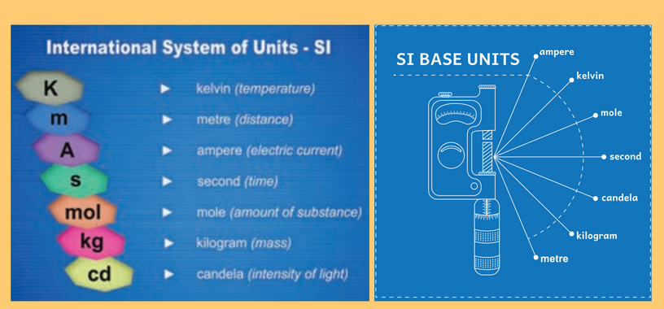
To understand the need for measurement in daily life.
To define length, mass and time.
To evaluate the values of some physical quantities in terms of their units and sub-units.
To identify zero error and parallax error.
To construct measuring tools (models).
To solve problems based on conversion of units.
Your brother asks you what your height is. How will you measure it and tell him?
Your friends decide to play kabbadi. How will you measure and draw the border lines?
Your father gives you a bag and asks you to get potatoes. How will you ask the shopkeeper?
Your mother gets milk from the milkman daily. How much does she get?
How long will it take to reach your school from your house?
How does the shopkeeper measure kerosene while selling it?
To do the tasks given above, we need to know about measurement. The comparison of unknown quantities with some known quantities is known as measurement. Measurement of a quantity has two parts: a number and a unit.
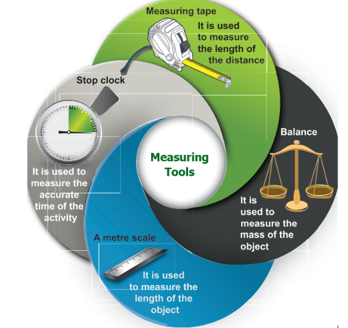
To measure the quantities we need measuring tools. What are the measuring tools that you know? Which of those tools you will use to do the tasks listed above and the similar ones?
We hear the terms related to measurement like weight, kilogram, litres, millilitres, kilometre, length, distance etc. In this chapter let’s study in detail about length, mass and time and the necessity to measure them.
What is length? The distance between one point and the other desired point is known as length. It may be the distance between the edges of your book or the corners of the football ground in your school or even from your home to school.
The standard unit of length is 'metre'. It is represented by the letter ‘m’. Very small lengths can be measured in millimetre with in bracket (mm) and centimetre with in bracket (cm). Larger measures, say height of a building, length of a banner or height of a lamp post are all measured in metre. How to express still longer lengths say, distance between two cities or villages or distance between your school and home? It is expressed in kilometre with in bracket (km).
Know the unit of length
1 k m (kilometre) = 1000 m open bracket (metre) close bracket
1 m (metre) = 100 c m open bracket (centimetre) close bracket
1 c m (centimetre) = 10 m m open bracket (millimetre) close bracket
Think: Can you express 1 km in centimetre?
Let us measure the length of your pencil.
1. Take the meter scale
2. Notice the lines with marking 1 2 3 4 ... till 15 open bracket (for smaller scales) close bracket or 30 open bracket (bigger scales) close bracket. The distance between two numbers within bracket (say between 1 and 2) denotes a centimetre within bracket (written as ‘cm’).
3. Notice, in between 1 and 2 there will be smaller markings. If you count, there will be 9 such lines. The distance between any two consecutive smaller markings within a ‘cm’ denotes a millimetre within bracket (written as ‘mm’).
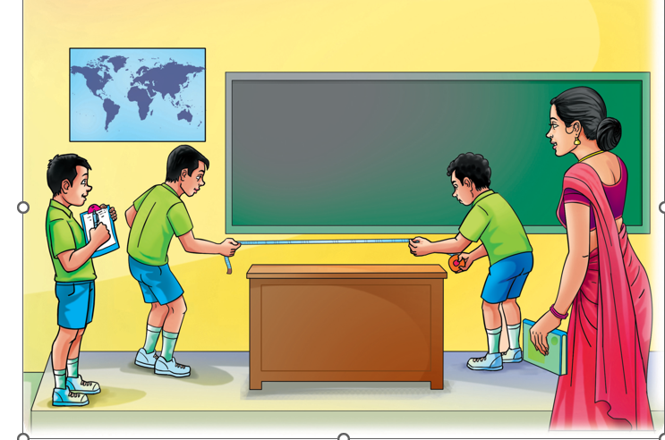
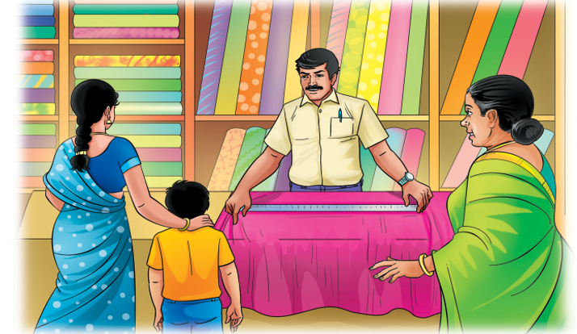
Why do we need SI Units?
Activity 1
Form a group of 5 members. Select one person and let others measure her or his height individually using hand span and cubit. Compare your answers with others. Do you find any difference? Why? Now you all stand in front of a wall and mark your height on the wall. Measure your height with a scale. What differences do you infer?
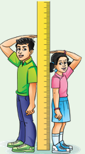
From the activity 1, you see that your measurement is different from that of your friends. Similarly different measuring units are used in different countries.
For the sake of uniformity, scientists all over the world have adopted a common set of units to express measurements. This system is called as the International System of Units or SI Units.
• SI unit for length is metre
• SI unit for mass is kilogram
• SI unit for time is second
• SI unit for area is metre square
• SI unit for volume is metre cube
Prefix
Multiples and sub-multiples of SI units are given as prefixes. Some prefixes are given in the table. Multiples and Sub-multiples of SI Units
Prefix
|
Abbreviation |
Submultiple or multiple |
For Metre |
Deci |
D |
Submutiple:1 by 10 |
10 decimeter = 1 meter |
Centi |
C |
Submutiple: 1 by 100 |
100 centimeter = 1 meter |
Milli |
M |
Submutiple: 1 by 1000 |
1000 millimeter =1meter |
Nano |
N |
Submutiple:1 by 1000000000 |
1000000000 nanometer =1meter |
Kilo |
K |
mutiple: 1000 |
1000 meter = 1 kilometer |
Measure the objects or event given in the table using suitable measuring units and
express them with suitable multiple and submultiples.
Picture |
Activity |
Measuring Unit M or kg or s |
Multiple or Submultiple |
Length of tip of pencil |
meter |
millimeter |
|
Length of the pen |
|
|
|
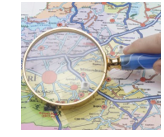 |
Distance between two cities |
|
|
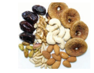 |
Mass of dry fruits in table |
|
|
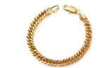 |
Mass of ornaments |
|
|
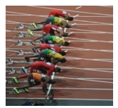 |
Time taken to finish 100 meter race |
|
|
Corrective measures for Measurement
Measurement has to be accurate and the approach has to be correct always. In our day to day life approximation may not have much impact. But it has a large impact in scientific calculations. For example, if the curvature of key (lock and key) is changed even by 1 mm, the lock would not open. So, measurements have to be accurate in scientific calculations. Let us look at some common mistakes that occur while using a scale.
To measure the length of a pin
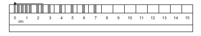
•The head of the pin has to coincide with ‘0’ of the scale.
•Count the number of centimetre and from there count the number of finer divisions. The count of the division is in ‘milli metre’
•In the above example the length of pin is 2 cm and 6 mm.
•Write the correct submultiple completely.
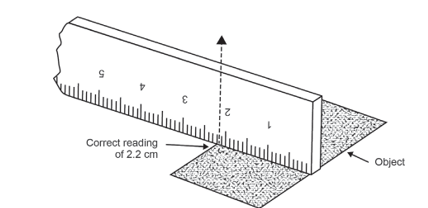
Note:
•Always keep the object parallel to the scale.
•Start the measurement from ‘0’ of the scale.
Activity 2
Aim:
To find the length of a curved line using a string.
Materials needed: A meter scale, a measuring tape, a string and a sketch pen
Method:
•Draw a curved line A B on a piece of paper
•Place a string along the curved line. Make sure that the string covers every bit of the curved line.
•Mark the points where the curved line begins and ends on the string.
•Now, stretch the string along the length of a meter scale and measure the distance between the two markings of the string and note it.
•This will give you the length of a curved line.
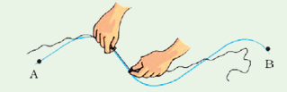
To find a length of a banana
Parallax Error
Parallax is a displacement or difference in the apparent position of an object viewed along two different lines of sight.
Correct position of the eye is also important for taking measurement. Your eye must be vertically above the point where the measurement has to be taken. In the above representation, to avoid parallax error, reading from B will be correct. From positions ‘A’ and ‘C’, the readings will be different and erroneous.
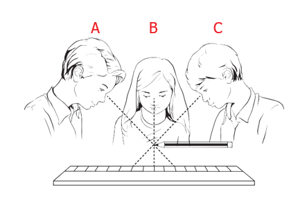
Activity 3
Aim : Measuring the length of a curved line using a divider.
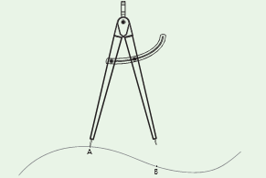
Draw a curved line A B on a piece of paper.
Separate the legs of the divider by 0.5 cm or 1 cm using a ruler.
Place it on the curved line starting from one end. Mark the position of the other end. Move it along the line again and again cutting the line into number of segments of equal lengths. The remaining parts of the line can be measured using a scale. Count the number of segments.
Therefore the length of the line is equal to the number of segments multiplied by length of each segment plus length of left over part.
Mass is the measure of the amount of matter in an object. The SI unit of mass is kilogram. It is represented by ‘kg’. Weight is the gravitational pull experienced by matter. The weight is directly proportional to the mass on the Earth's surface.
Hold a sheet of paper in one hand and a book in other hand. Which hand feels the heaviness? The mass of the book is more than that of a single sheet of paper. Therefore, the pull on the book is more than that is on the paper. Hence, our hand needs more force to hold a book than a piece of paper. The force what we experience is called as ‘heaviness’.
Do you know
On the moon where the gravitational force is less than that is on the earth, the weight will reduce but the mass will remain same. The moon’s gravitational pull is one sixth of the earth’s pull. Thus objects weigh six times lighter on the Moon than on the Earth.
What is your mass? If you measure it in grams, that would be a huge number. Is it not? So, it is expressed in kilogram. Bigger weights are measured in tonne or metric tonne.
1000 milligram= 1 gram
1000 gram=1 kilogram
1000 kilogram=1 tonne
Beam Balance
We use beam balance to measure mass. A beam balance works by comparing the mass of an object to that of known mass (called a standard mass).
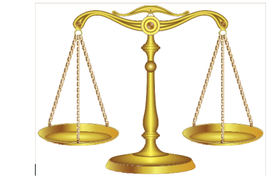
Activity 4
Construct your own beam balance using two scrapped coconut shells, strings or twines, thick cardboard as frame and a little sharpened pencil as index needle.
What can you achieve?
1. Find which object is heavier.
2. Find the approximate weight of lighter things like leaves, piece of papers etc.
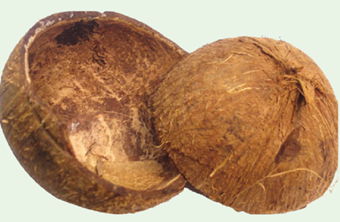
Electronic Balance
An electronic balance is a device used to find the accurate measurements of weight. It is used very commonly in laboratories for weighing chemicals to ensure a precise measurement of those chemicals for using in various experiments. Electronic balances may also be used to weigh food, other grocery items as well as jewellery.
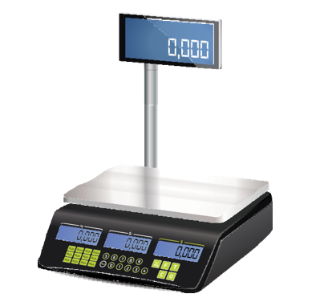
Day changes into night and night in today. Seasons also change. We know time also changes. How do we measure change of time? Clocks are used to measure time. You know how to read a clock face and note the time. You can also use your pulse to measure the time roughly. Count the number of pulses. That can tell you the time elapsed.
Activity 5: Ask four or five of your friends to run a race from one end of the school to the other end. Mark the starting point and the ending point. Using your pulse (or counting by counting 1 2 3 etcetera) count the time taken by each of them to complete the race. Check who is fast?
Do you know?
In the earlier days, people used sand clock and sundial to measure the passage of time during day time. The shadow cast by a stick can be used to estimate time. A vessel having a small hole is filled with sand and it is used as a clock. The sand in the vessel is allowed to come down and it is used to estimate the time.
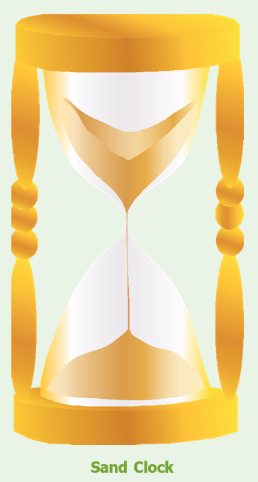
These are rough methods for counting passage of time. We can use electronic clock, stop watch and other instruments to count even smaller duration of time.
Fast Facts
An odometer is a device used for indicating distance travelled by an automobile.
The metric system or standard set of units was created by the French in 1790.
A ruler or scale, used now a days to measure length, was invented by William Bedwell in the 16th century.
A standard metre rod made of an alloy of platinum and iridium is placed at the Bureau of Weights and Measures in Paris. National Physical Laboratory in Delhi has a copy of this metre rod.
One kilogram is equal to the mass of a certain bar of platinum-iridium alloy that has been kept at the International Bureau of Weights and Measures in Sèvres, France since 1889.
Numerical Problems
Look at a meter scale carefully and answer the following.
• How many millimeter divisions are there in a centimeter?
• How many centimeter divisions are there in a meter?
Complete the following.
7875 cm = dash metre dash centimetre
1195 metre = dash kilo metre dash metre
15 centimetres 10 millimetre = dash millimetre
45 kilometres 33 metre = dash metre.
Some open ended questions
•During your school sport day, it is planned to conduct a mini marathon race within the school campus. They decided that the running distance be 2 kilometres. Is it possible to have a school campus with the circumference of 2km? Discuss with your friends, how big the campus should be. Give other options if it is not a big campus.
•Is the distance in the sea also calculated in kilometres? How is it possible to calculate the distance in sea water? Explore!
•We know that the distance between celestial bodies is calculated in terms of light year. Light year is the distance travelled by light in one year. Now without calculator find how many kilometres light would have travelled in a year. Get the speed of light from your teacher.
•We see that the distances between Chennai and Madurai is written as 462 km. But from which point to which point is this distance calculated?. As we are science student’s we need to know it with the precision. Is it between the two bus stands? Or between the two railway stations? Discuss and figure it out. Check your answers with your teacher.
•A person needs to drink two litres of water a day. Note down how much water you drink each day? Make a rough calculation and check if you are drinking the required amount of water.
•The comparison of an unknown quantity with some known quantity is known as measurement.
•All physical quantities have standard units for the sake of uniformity.
•Length, mass and time are some of the fundamental physical quantities.
•The SI units are:
Length-metre
Mass-kilogram
Time-second
•While using a ruler, the accurate measurement can be arrived by avoiding three types of possible errors.
•Electronic balance is an instrument which provides accurate measurement of mass correct upto milligram.
1. The height of a tree can be measured by
a) metre scale
b) metre rod
c) plastic ruler
d) measuring tape
2. Conversion of 7 metre into centimetre gives dash.
a) 70 cm
b) 7 cm
c) 700 cm
d) 7000 cm
3. Quantity that can be measured is called dash.
a) physical quantity
b) measurement
c) unit
d) motion
4. Choose the correct one
a) kilometre greater than milli meter greater than centimetre greater than metre
b) kilometre greater than milli metre greater than metre greater than centimetre
c) kilometre greater than metre greater than centimetre greater than milli metre
d) kilometre greater than centimetre greater than metre greater than milli metre
5. While measuring the length of an object using a ruler, the position of your eye should be
a) left side of the point.
b) vertically above the point where the measurement is to be taken.
c) right side of the point
d) any where according to one’s convenience.
1. SI Unit of length is dash.
2. 5 hundred gm = dash kilogram.
3. The distance between Delhi and Chennai can be measured in dash.
4. 1 metre = dash centimetre.
5. 5 km = dash metre.
1. We can say that mass of an object is 126 kg.
2. Length of one’s chest can be measured using metre scale.
3. Ten millimetre makes one centimetre.
4. A hand span is a reliable measure of length.
5. The SI system of units is accepted everywhere in the world.
1. Sugar: Beam balance: Lime juice: dash
2. Height of a person: centimetre: Length of your sharpened pencil lead: dash
3. Milk: Volume: Vegetables: dash.
1. Length of the fore arm. a. metre
2. SI unit of length. b. second
3. Nano. c. 10 power3
4. SI Unit of time d. 10 power minus9
5. Kilo. e. Cubit
1 Metre, 1 centimetre, 1 kilometre, and 1 millimetre.
1. What is the full form of SI system?
2. Name any one instrument used for measuring mass.
3. Find the odd one out.
kilogram, millimetre, centimetre, nanometre
4. What is the SI Unit of mass?
5. What are the two parts present in a measurement?
1. 10 to the power minus 3 is one dash.
2. SI Unit of time is dash.
3. Cross view of reading a measurement leads to dash.
4. dash is the one what a clock reads.
5. dash is the amount of substance present in an object.
6. dash can be taken to get the final reading of the recordings of different students for a single measurement.
7. dash is a fundamental quantity.
8. dash shows the distance covered by an automobile
9. A tailor uses dash to take measurements to stitch the cloth.
10. Liquids are measured with this physical quantity.
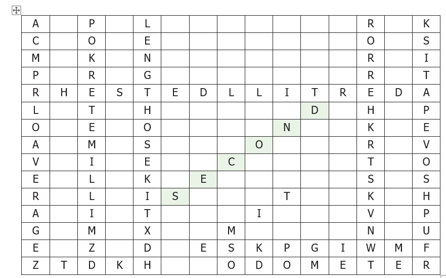
1. Define measurement.
2. Define mass.
3. The distance between two places is 43.65 km. Convert it into metre and centimetre.
4. What are the rules to be followed to make accurate measurement with scale?
1. The distance between your school and your house is 2250 metre. Express this distance in kilometre.
2. While measuring the length of a sharpened pencil, reading of the scale at one end is 2.0 cm and at the other end is 12.1 cm. What is the length of the pencil?
1. Explain two methods that you can use to measure the length of a curved line.
2. Fill in the following chart.
Property |
Definition |
Basic unit |
Instrument used for measuring |
Length |
|
|
|
Mass |
|
|
|
Volume |
|
|
|
Time |
|
|
|
|
|
|
|
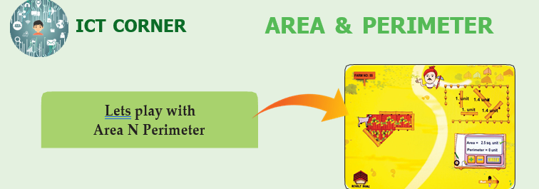
Steps:
•Access the application by typing Area N Perimeter or install with the help of the link given below or the given QR code
•Open the Application and click START button.
•You can see the field whose area is to be measured. Drag and put the tiles on field.
•Use the (+) and (minus) to find out the area of the given field.
•Click the CHECK button to check your answer.
•You can view your whole results by clicking the RESULT button.
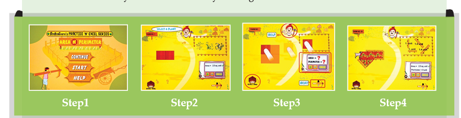
URL:
https://play.google.com/store/apps/details?id=com.b o d h a g u r u.Area N Perimeter
* Pictures are indicative only.


To identify that push or pull or both are involved when there is a motion.
To understand that some forces are contact forces and some are non-contact forces.
To know that when a force is applied, it can make things move, change the direction or change its shape and size.
To distinguish between rest and motion and understand that they are relative.
To infer motion is caused by application of force.
To classify different types of motion.
To deduce the definition of speed.
To understand and use the unit of speed.
To distinguish uniform and non-uniform motion.
To compute time, distance and speed.
We have studied in our earlier classes that push or pull results in some motion of the object. When we open the door or kick a football or lift our school bag, motion is involved and there is some push or pull.

What is rest? What is motion?
Suppose there is a book on your table right in the middle. Is the book moving? You will say it is not moving; it is at rest. If you push the book to one side of the table to clear the space for keeping your notebook, then you will say the book is moving. When the book was at the same place with respect to the table, it was at rest; but when it was pushed from one place on the table to another place, it was moving.

Activity 1
Can you identify whether it is push or pull that results in motion in the following cases?

When there is a change in the position of an object with respect to time, then it is called motion. If it remains stationary it is called rest.
Is Mohan in motion?
Observe the following pictures and say whether Mohan is in motion or at rest
![The picture shows a short story to explain rest and motion are relative in nature. This is comical story. the story goes like this, Anitha and babu are standing under a tree at the bus stand waiting for a bus to Madurai. Two of their friends, Reka and Mohan, get into a bus to go to Thanjavur. The bus starts. Anitha asks Hey babu would you say that Mohan is in motion? Babu replies yes, of course. Anitha asked again How can you say that? I can see he is just sitting in the bus! Babu replied Yes, but the bus is moving is not it? Anitha replied so what? Now Babu told you never believe me, ask reka. Now Anitha took moile and called reka and asked hay Reka, do you think mohan is moving? for this qustion Reka replied as No Mohan is not. He is just sitting in one place.](images/image-38.png)

Discuss: Who is correct? Is Mohan really in motion?
We can clearly say that both Reka and Babu are correct. From the point of view of Babu, Mohan along with the bus is in motion; but for Reka who is sitting beside him, he is at one place; therefore stationary. So, according to Babu, Mohan is in motion; Mohan is at rest from Reka's observation. Can you think any other examples?

Answer by observing the situation in the picture
Event 1: The man in the boat is moving with respect to the bank of river. He is at rest with respect to the boat.

Event 2:
The girl on the swing is dash with respect to the seat of the swing.
She is dash with respect to the garden.

Event 3: Nisha is going to her grandmother's house by bicycle. Sitting on the bicycle, Nisha is dash with respect to the road. She is dash with respect to the bicycle.

Take the case of a book on a table at rest. Is it really without any motion? We know that Earth is rotating on its axis; therefore the table along with the book must be rotating. Is it not? We are also moving along with the earth. Therefore, from the point of view of the ground on which we stand, the book is at ‘rest’. Similarly, while travelling in a bus, we feel that the poles and trees seem to move backwards, and the things inside the bus are stationary.

An object may appear to be stationary for one observer and appear to be moving for another. An object is at rest in relation to a certain set of objects and moving in relation to another set of objects. This implies that rest and motion are relative.
Activity 2
Moon or Cloud?
Observe the moon on a windy night with a fair bit of cloud cover in the sky. As the cloud passes in front of the moon you sometimes think it is the moon which is moving behind the cloud. What would you think if you were to observe a tree at same time ?.

How things move?
When we kick a ball it moves. When we push the book on the table, it moves. When a bullock pulls, the cart moves. Motion occurs when an object is pulled or pushed by an agency.

In our daily life, we pull out water from the well using bucket. Animals pull a bullock cart. It is a person or animal, that is an animate agency that does the pushing or pulling.
Sometimes we see a tall grass in the meadow dancing in the wind or a piece of wood moving down a stream. What pushes or pulls them? We know that blowing wind and flowing water is the cause. Sometimes the push or pull can be due to the inanimate agency.
Forces are push or pull by an animate or inanimate agency.
Contact, Non-contact Forces
Forces can be classified into two major types; contact and non-contact forces.
Wind making a flag flutter, a bullock pulling a cart are contact forces. Magnetism, gravity are some examples of non-contact forces.
In all the above cases, the force is executed by touching the body. So, this type of forces are called contact forces.
Mysteriously, ripen coconut falls to the ground. What pulls it to the ground? We would have heard about ‘force of gravity’ of Earth. Gravity pulls the ripen coconut from the tree to the ground.

When we bring a magnet near a small iron nail, the nail jumps into the air and sticks with the magnet. Observe that the magnet and the nail did not touch each other. Still, there was a pulling force that made the nail to jump towards the magnet. In these two examples, the force is applied without touching the object. Such forces are known as non-contact forces.

What happens when we apply a force on an object?
What happens when you apply a force on an object? Say, you push a book on the table. The book moves. Application of force in an object results in motion from a state of rest.
What happens when a batsman hit a ball? The ball is already in motion, but with the strike, the speed of the ball increases. Moreover the direction of the ball changes. Application of force on an object results in a change in its speed and change in its direction.
When we crush a balloon or press roti dough or pull a rubber band, the shape of the object changes on application of force. Application of force in object results in expansion or contraction.


Look at this picture. The person is applying force to stop the cart from moving. When the force is applied against the direction of the motion, the speed can be reduced, or even the motion is stopped completely. Discuss what happens when you apply break in a speeding bicycle.
In a nutshell, we can say that the applied force is an interaction of one object on another that causes the second object to move from rest, speed up, slow down, stop the motion, change the direction, compress or expand.
Forces can
1. Change the states of a body from rest to motion or motion to rest.
2. Either change the speed or direction or both of the body.
3. Change the shape of the body.
Activity 3
Fill in the empty spaces

Activity 4
Do what Shanthi did.
Play with pencil
(1) Shanthi took a pencil and sharpened it with a sharpener. (ii) Then she drew a circle using the pencil and a compass. (iii) Later she took her ruler within bracket (scale) and drew a straight line in another paper. (iv) Then she kept the pencil between her fingers and moved it back and forth.

Now, look at the motion of the pencil in all these four cases. How was it?
(1) In the first case, the pencil rotated in its axis.
(ii) In the second case, it went in a circle.
(iii) In the third case, the pencil travelled in a straight line.
(iv) In the fourth case, the pencil tip moved back and forth, that is it oscillated like a swing.
We can say that the motion of the pencil was rotational, circular, straight line or linear and later oscillatory.
Throw paper aeroplanes or paper dart. Watch its flight path when you throw it at an angle. The path curves that is the paper flight is moving ahead but its direction is changing while moving. Such paths are called curvilinear.

A fly buzzing around the room is a combination of all these motions and flight path is zigzag.

You can classify the motion according to the path taken by the object.
a. Linear motion- Motion in a straight line. Example A person walking on a straight path.
b. Curvilinear motion - Motion of a body moving ahead but changing direction. Example Motion of a ball thrown.
c. Circular motion - Motion in a circle. Example Swirling stone tied to the rope.
d. Rotatory motion - Motion of a body about its own axis. Example Rotating top.
e. Oscillatory motion - A body coming back to the same position after a fixed time interval. Example A pendulum.
f. Zigzag (irregular) - The motion of a body in different direction. Example People walking in a crowded street.
Do you know
Oscillations at Greater Speed
Ask your friend to hold the two ends of a stretched rubber band. Strike it in the middle. Do you see that it oscillates very fast? When the oscillation is very swift, it is called as vibration.
Fast oscillations are referred to as vibrations.
Activity 5

Activity 6
Classify the following according to the path it takes.
Linear, Curvilinear, Circular, Rotatory, Oscillatory, Zigzag (irregular)
•A sprinter running a 100 metres race |
|
•A coconut falling from a tree |
|
•Striking a coin in a carom board game |
|
•Motion of flies and mosquitoes |
|
•Beating of heart |
|
•Children playing in a swing |
|
•The tip of hands of a clock |
|
•Flapping of elephant’s ears |
|
•A stone thrown into the air at an angle |
|
•Movement of people in a bazaar |
|
•Athlete running around a track |
|
•Revolution of the moon around the earth |
|
•The movement of a ball kicked in a football match |
|
•Motion of a spinning top |
|
•Revolution of the earth around the sun |
|
•Swinging of a pendulum |
|
•Children skidding on a sliding board |
|
•Skidding down a playground slide |
|
•Wagging tail of a dog |
|
•Flapping of a flag in wind |
|
•A car driving around a curve |
|
•Woodcutter cutting with a saw |
|
•Motion of water wave |
|
•Motion of piston inside a syringe |
|
•Bouncing ball |
|
Add five motions you observe to this list |
|
|
|
|
|
|
|
|
|
|
|
Periodic and non-periodic motions
Take the case of the hour-hand of a clock. In oneday it makes two rounds. Look at a bouncing ball. It bounces a certain number of times for a given time interval or period. Look at the water waves. In a given period that is in a time interval, a fixed number of waves hit the shore. Motion repeated in equal intervals of time is called as periodic motion.
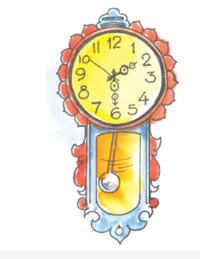
Let us take the example of sapling swing in wind. This motion is not in uniform interval. Such motions are called non-periodic motion.
Revolution of the Moon around the Earth is periodic but not oscillatory. However, the children playing in a swing is both periodic and oscillatory.
Do you know.
All oscillatory motions are periodic, but not all periodic motion are oscillatory motion.
Fast Versus Slow?
Look at a tall tree. When the wind is gentle, its branches are dancing slowly; but if the gentle wind becomes strong, the branches shake violently, and if the speed increases further, the branch may even break and fall. That is the motion can be slow or fast. Can we say a motion is slow or fast without comparing anything?
Compared to walking, cycling is fast, but a bus is faster than a cycle. The aeroplane is much faster than a bus. So, slow or fast is a relative concept which depends upon the motions we are comparing. Then how do we say a body moves at a particular speed?
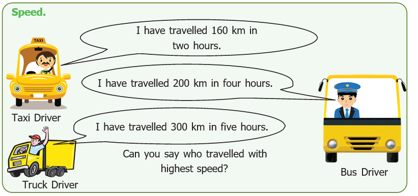
Let us calculate how long they travelled in one hour?
•Distance travelled by the car in one hour equal to 80 km (160 divided by 2)
•Distance travelled by the bus in one hour equal to dash kilo metre
•Distance travelled by the truck in one hour equal to dash kilo metre
Have you found out? Say now. Who is fast? Dash. Who is slow? Dash.
Have you noticed that saying who is fast or slow is easy when we calculate the distance they travelled in one hour? In other words, you divide the distance travelled by the time taken to get the speed.
The distance travelled by an object in unit time is called speed of the object.
If an object travelled a distance 'd' in time 't' then, its speed is given as:
Speed d equal to distance travelled divide by time taken d divide by t
Suppose a car travels 300 km in one hour. Then we say that the speed of the car is ‘300 kmph’ (We read it as ‘three hundred kilometres per hour’).
If an object travelled 10 metre in 2 second, then its speed is given as:
Speed with in bracket (s)=Distance travelled with in bracket (d) divide by Time taken with in bracket (t)
= 10 metre divided by 2 second
= 5 metre per second
A bus takes three hours to cover a distance of 180 kilometres. Then its speed is given as:
Speed within bracket (s) = Distance travelled with in bracket (d) divided by Time taken within bracket(t)
= 180 kilometre divided by 3 hour
= 60 kilometre per hour
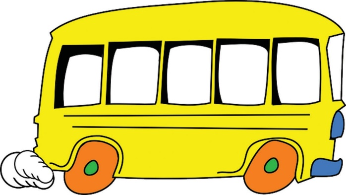
Note that metre per second or kilometre per hour comes next to our answer for speed. What is it?
Observe the formula for speed. If we denote the distance in metre and time by second then the unit of speed is metre per second. If we denote the distance in kilometre and time in hour then the unit of speed is kilometre per hour. Sometimes we use units like centimetre per second.
In science we generally use SI units. In SI units. the unit of distance is metre and the unit of time is second. So, the SI unit of speed is metre per second.
Let us calculate
1. A car travelled 150 metre in 10 second. What is its speed?
2. Priya rides her bicycle 40 km in two hours. What is her speed?
Our speed...
Let us play a small game. Go to the playground with your friends. Mark 100 metre distance for a race. Conduct a friendly running race and calculate the time taken by them to complete the distance. Now record the time in the table.
Serial Number |
Name of the student |
Distance |
Time taken in seconds |
Speed = distance travelled divide by time taken |
Speed meter per second |
1 |
Murugesan |
100 meters |
12 seconds |
100 meters divide by 12 seconds |
8.3 meter per seconds |
2 |
|
100 meters |
|
|
|
3 |
|
100 meters |
|
|
|
4 |
|
100 meters |
|
|
|
5 |
|
100 meters |
|
|
|
If you know the speed of an object and the time taken by it, then we can compute how much distance it had travelled.
We know that,
Speed = Distance travelled divide by time taken
S = d divide by t or s multiplied by t = d
Therefore, the distance travelled with in bracket (d) = speed with in bracket (s) multiplied by time within bracket (t)
d = s multiply t
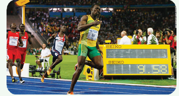
Usain Bolt crossed 100 metre in 9.58 seconds and made a world record. If you are able to run faster than him, then Olympic Gold Medal is waiting for you.
If a ship travelled at a speed of 50 kilometre per hour and it sailed for five hours, how much distance it has travelled?
Distance = s multiply by t
= 50 kilometer per hour multiply by 5 hour = 250 km
If we know the speed and distance travelled, we can compute the time taken.
s= d divide by t or t = d divide by s
Time taken = distance travelled divide by speed
Suppose a bus travels at a speed of 50 kilometre per hour and has to cover a distance of 300 km, how much time will it take?
t= d divide by s = 300 kilometre divided 50 kilometre per hour = 6 hour.
Compute the following Numerical Problems.
1. If you travel 10 kilometres in 2 hours, your speed is dash kilometre per hour.
2. If you travel 15 kilometres in half an hour, you would travel dash kilometre in one hour, and your speed is dash kilometre per hour.
3. If you run fast at 20 kilometres per hour for 2 hours, you will cover dash kilometre.
FACT FILE
A Cheetah is the fastest land animal running at a speed of 112 km per hour.
Uniform and Non-uniform motion
Suppose a train leaves Thiruchirapalli and arrives at Madurai. Will the train travel in an uniform speed? First, the train will be stationary. When the train leaves the station, the motion will be slow. After it moved some distance it will gather speed. After that it may slow down while crossing bridges and stop at intermediate stations for passengers. Finally, as the train approaches Madurai, again it will slow and finally will come to a halt. It means that the speed is not the same all through the journey. That is, the speed is non-uniform. This motion is said to be non-uniform motion.
However, in between the journey, there may be a stretch where in the train might go at a constant speed. During that interval the train will be moving at uniform speed. That is, its motion is uniform.
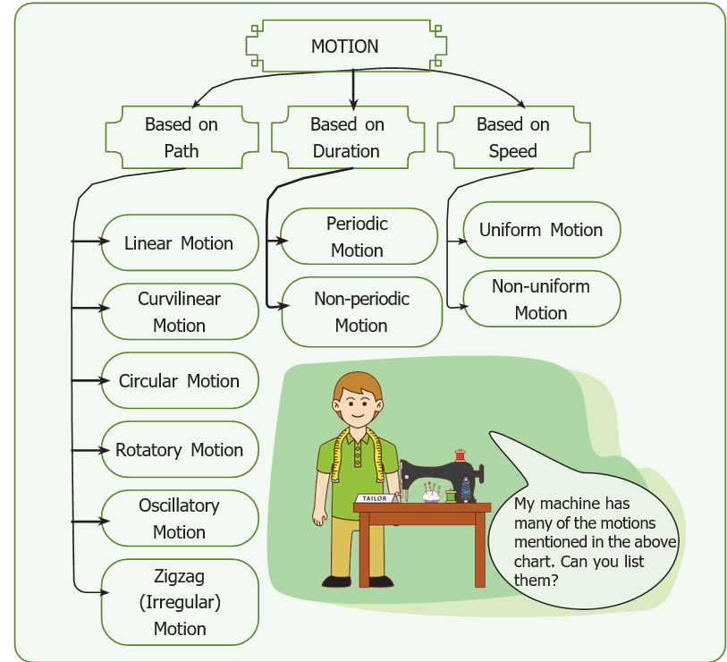
Many motions we see in our day to day life are non-uniform. We will learn more about uniform and non-uniform motion in higher classes.
If an object covers uniform distances in uniform intervals then the motion of the object is called uniform motion. Otherwise the motion is called non- uniform motion.
In a nutshell, we can classify the motion in terms of
a) path
b) if it is periodic or not
c) if the speed is uniform or not.
However, in real life, the motions are combinations of many types of motion.
Multiple Motion
Look at the bicycle in the picture. What type of motion does the wheel perform? What type of motion does the cycle in total perform?
The tyres rotate and make a rotatory motion, but the cycle as such moves forward in a linear path.
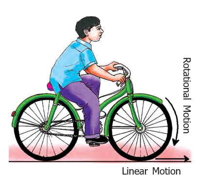
Activity 7
Simple Spinner
Let us enjoy by making a simple spinner. Make it by the following instruction.
Cut a 2cm long piece from an old ball-pen refill and make a hole in its center with a divider point (Figure. 1). Take a thin wire of length 9cm and fold it into a U-shape (Figure. 2). Weave the refill spinner in the U-shaped wire (Figure. 3). Wrap the two ends of the wire on the plastic refill, leaving enough clearance for the spinner to rotate (Figure. 4). On blowing through the refill, the spinner rotates (Figure. 5). For obtaining maximum speed adjust the wires so that air is directed towards the ends of the spinner. Have you enjoyed with simple spinner? Do you observe the motions in the toy? Can you answer the following questions?
1. Motion of the air in tube is dash motion.
2. Motion of the refill stick is dash motion.
3. The toy converts dash motion into dash motion.
Think
In a simple spinner linear motion is converted into rotatory motion. Can you make a toy which converts rotatory motion into linear motion?
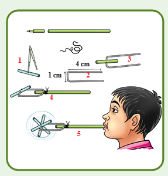
Multiple motion in a sewing machine
•Motion of the needle dash
•Motion of the wheel dash
•Motion of footrest dash
Robots are automatic machines. Some robots can perform mechanical and repetitive jobs faster and more accurately than people. Robots can also handle dangerous materials and explore distant planets. The term 'robot' comes from a czech word, ‘robota’ meaning ‘forced labour’. Robotics is the science and study of robots.
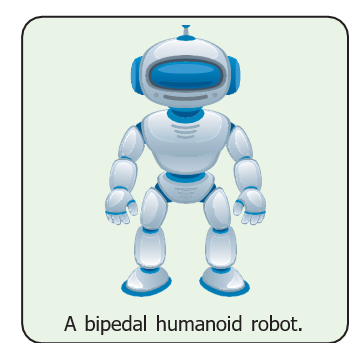
What can Robots do?
Robots can sense and respond to their surroundings. They can handle delicate objects or apply great force. For example, they can perform eye operations guided by a human surgeon, or assemble a car. With artificial intelligence, robots will also be able to make decisions for themselves.
How do Robots sense?
Electronic sensors function as robot’s eyes and ears. Twin video cameras give the robot a 3-D view of the world. Microphones detect sounds. Pressure sensors give the robot a sense of touch, to judge how to grip an egg or heavy luggage. Built-in computers send and receive information with radio waves.
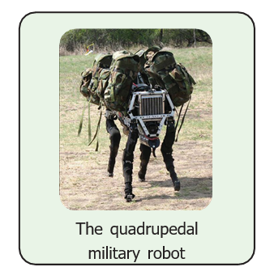
Artificial Intelligence
Artificial intelligence attempts to create computer programs that think like human brains. Current research has not achieved this, but some computers can be programmed to recognize faces in a crowd.
Can Robots think?
Robots can think. They can play complex games, such as chess, better than human beings. But will a robot ever know that it is thinking? Humans are conscious - we know we are thinking. But we do not know how consciousness works. We do not know if Robots can ever be conscious.
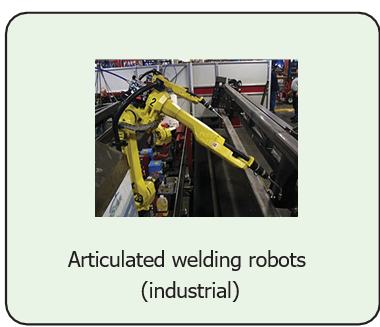
Nanorobotics
Nanobots are robots scaled down to microscopic size in order to put them into very small spaces to perform a function. Future nanobots could be placed in the blood stream to perform surgical procedures that are too delicate or too difficult for standard surgery. Imagine if a nanobot could target cancer cells and destroy them without touching healthy cells nearby.
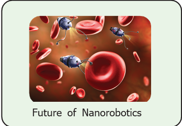
•Motion and rest are relative.
•All things that are at rest may seem to be in motion from a different point of view, and all motion may seem to be at rest from a different perspective.
•Application of forces is implemented by a push or pull. Forces can be applied by animate as well as inanimate agency.
•Application of forces result in motion of an object at rest, increase or decrease its speed, change its direction, and distortion of the shape.
•Some forces act only when they are in contact. There are some forces which can even have effect at a distance.
•Speed = Distance travelled divided by Time taken (s= d divided by t)
•The motion can be classified according to the path (periodic or non-periodic) or according to speed (uniform or non-uniform).
•Unit of speed is metre per second.
1. Unit of speed is
a. metre
b. second
c. kilogram
d. metre per second
2. Which among the following is an oscillatory motion?
a. Rotation of the earth about its axis.
b. Revolution of the moon about the earth.
c. To and fro movement of a vibrating string.
d. All of these.
3. The correct relation among the following is
a. Speed = Distance multiply by Time
b. Speed = Distance divided by Time
c. Speed = Time divided by Distance
d. Speed = 1 divide by (Distance multiply by Time)
4. Gita travels with her father in a bike to her uncle’s house which is 40 km away from her home. She takes 40 minutes to reach there.
Statement 1 : She travels at a speed of 1 km per minute.
Statement 2 : She travels at a speed of 1 km per hour.
a. Statement 1 alone is correct.
b. Statement 2 alone is correct.
c. Both statements are correct.
d. Neither statement 1 nor statement 2 is correct.
1. A bike moving on a straight road is an example for dash motion.
2. Gravitational force is a dash force.
3. Motion of a potter’s wheel is an example for dash motion.
4. When an object covers equal distances in equal interval of time, it is said to be in dash motion.
1. To and fro motion is called oscillatory motion.
2. Vibratory motion and rotatory motion are periodic motions.
3. Vehicles moving with varying speeds are said to be in uniform motion.
4. Robots will replace human in future
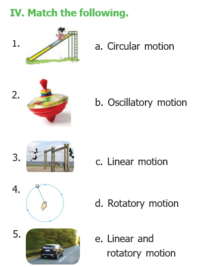
Distance (d) |
0 |
4 |
|
12 |
|
20 |
Time (t) |
0 |
2 |
4 |
|
8 |
10 |
1. Kicking a ball : Contact force :: Falling of leaf : dash
2. Distance : metre :: Speed : dash
3. Circulatory motion : A spinning top :: Oscillatory motion : dash

1. The force which acts on an object without physical contact. Dash
2. A change in the position of an object with time. Dash
3. The motion which repeats itself after a fixed interval of time. Dash
4. The motion of an object which covers equal distances in equal intervals of time. dash
5. A machine capable of carrying out a complex series of actions automatically. dash
1. Define force.
2. Name different types of motion based on the path.
3. If you are sitting in a moving car, will you be at rest or motion with respect your friend sitting next to you?
4. Rotation of the earth is a periodic motion. Justify.
5. Differentiate between rotational and curvilinear motion
1. What is motion? Classify different types of motion with examples.
1. A vehicle covers a distance of 400km in 5 hour. Calculate its speed.
1. Linear motion dash
2. Curvilinear motion dash
3. Self rotary motion – motion of the wheel in a cart
4. Circular motion dash
5. Oscillatory motion dash
6. Irregular motion dash
ICT CORNER
Force and motion

Steps:
•Lets learn force and motion on PhET in Google browser. Download and install.
•Drag any one side and place him in the knot portion of the rope. Now click go.
•If placed on the right side then the load will move in that direction. The place of the man and the number of man can be changed. The direction of force and the unit of force will display on the screen.
•If we place equal number of men on both the sides the load will not move.
•By changing the number of men the strength of force can be changed.

URL:
https://phet.colorado.edu/en/simulation/forces-and-motion-basics

* pictures are indicative only.
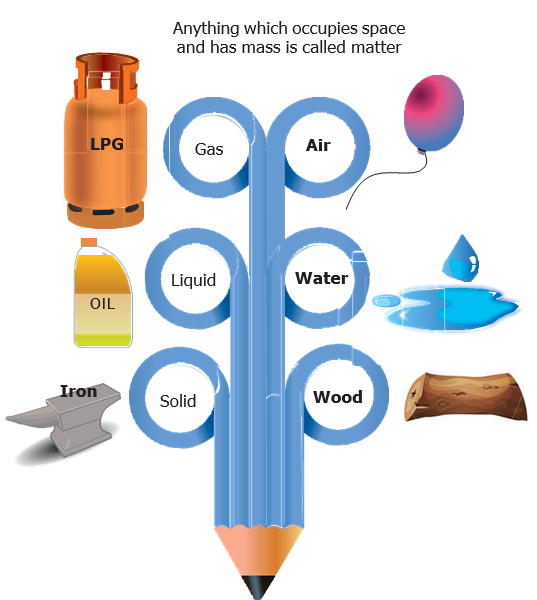
To define matter and develop an understanding on the particle nature of matter.
To sort the objects on the basis of certain properties.
To differentiate solids, liquids and gases based on the arrangement of their particles.
To differentiate pure substances from mixtures.
To identify the need for separation of mixtures.
To suggest suitable methods for separating given samples of mixtures.
To acquire an awareness on food adulteration and its harmful effects.
Matter is everywhere around us. The air we breathe, water we drink and the material we use are made up of matter. Matter is defined as anything that occupies space and has mass. Matter is found in three major states: solid, liquid and gas. Do you know what is matter made of?
Matter is made of atoms. Atoms are the smallest particle of matter. They are so small that you cannot see them with your eyes or even with a standard microscope. A standard sheet of paper is about millions of atoms thick. Science has come up with a technology to identify the structure of atoms by using atomic resolution Microscope (A R M) and Tunnelling Electron Microscope (T E M) which use electricity to map atoms. There is more about atoms in the later classes. But first let's learn about the three states of matter.
Matter occupies space and has mass. What is its nature? Many philosophers pondered over this question and came out with ideas.
Imagine that a piece of thread is cut endlessly using knife. At one point it would be like a small piece that it cannot be further cut by a knife. That small particle may contain millions of molecules and these molecules are made of atoms. Matter is made of such smallest particles 'atoms'. These atoms are extremely small even to see under a powerful microscope.
Activity 1
Take a few crystals of sugar. Observe them carefully with the help of a magnifying lens.
Which of the shapes given above resemble a sugar crystal?
A
B
C
D
E
F
Now place a few sugar crystals into water. What happens to the sugar crystals?
A sugar crystal is also made up of molecules. When sugar dissolves in water, the sugar crystals break down and the molecules of sugar get distributed in water. This makes water sweet in taste. The sugar molecules are extremely small; that is why we are not able to see them. Small amount of matter has many millions of molecules in it (1 million = 10 lakhs).
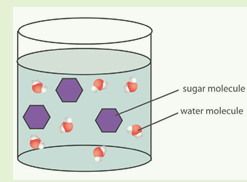
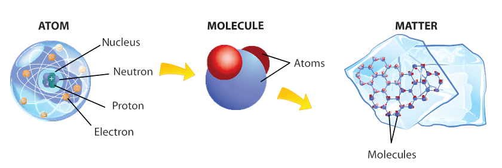
Characteristics of the particles of matter
1. Particles of matter have a lot of space in between them. In different forms of matter this spacing will be different.
Let us add a spoon full of sugar to a glass of water. Stir well. Sugar disappears completely. Where has it gone? Will the glass of water be now sweet? Water particles have space between them and sugar particles are now occupying those spaces.
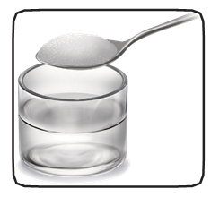
2. Particles of matter attract each other.
It is the force of attraction which keeps the particles together. This attractive force will be different for different forms of matter.
Grouping of Matter on the basis of Physical states
These are the three physical states of matter. Matter can be grouped into solids, liquids and gases based on the above characteristics.
Let us first take any solid say a stone: Answer the following questions.
Do you need a container to know the shape of a stone? Yes or No
A solid does not need a container. It stays as it is because its particles are tightly packed and has a definite shape.
If you move the stone from the ground to a table or place it on the shelf does it's shape change? Yes or No
If you take a stone from the ground and place it on the table or shelf its shape and volume do not change.
Activity 2
Sit together in groups of three. Look at the objects given below. Are they familiar to you? Are the same or different? On what basis you can group them? Is there only one way of doing it or more ways? Discuss with your group members and note down your points.
Pencil and books are used for studying. The bucket and the comb are made of plastic while the table and ladle are made of wood. The scrub brush and broom are rough but the toy bear is soft. Light can pass through a glass of water and the spectacles but not through apple or iron box. The cow and the bird are living things while the rest are not. Water in the glass is liquid but air in the balloon is gas and the rest are solids. The feather and the paper cup can float but not the apple or the piece of stone. The rubber band can be stretched but not the comb. Though they have different properties, they are matter.
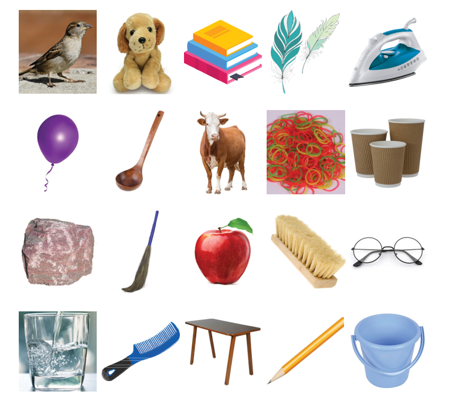
Try to fill in the following table
You can group them according to their uses, the materials with which they are made of or some other properties.
Serial number |
Things that float |
Things that sink |
1 |
|
|
2 |
|
|
3 |
|
|
Try to make more such tables based on the properties discussed above. How many tables could you make? How did you classify the items in the above list as solids, liquids and gases?
You should have done it based on some properties. Brick and door which are hard come under solids, things that flow come under liquids and others which are very light and can flow more freely come under gases.
Activity 3
Malar was asked to group some items based on their physical states. The table she made is given below. Do you agree with her? Correct the table if you do not agree and submit it to your teacher.
(Work in a group of two.)
Chalk piece |
Wind |
Steam |
Water |
Rain |
Lemon |
Air in a ballon |
Stone |
Lemon juice |
River |
Air |
Smoke |
Brick |
Table |
door |
Let us place a book on a table. Let it not be disturbed. Observe for five minutes. Now take a glass of water and add a drop of ink carefully at the centre. Do not shake or stir. Now light an incense stick and keep it in one corner of the room.
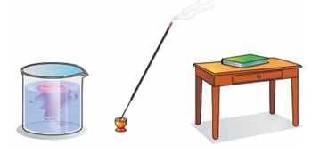
Let us answer the following questions.
•Did the book move?
•Did the ink particles move and spread itself in the water? How long did it take for complete mixing?
•Did you get the smell of the incense stick from where you are standing?
•How fast did you get the smell? How did the smell reach you?
We may conclude that the particles of gases and liquids can move easily and quickly. This tendency of particles to spread out in order to occupy the available space is called diffusion. Solids are tightly packed and they do not diffuse like liquids or gases. Hence ink and smoke spread easily while book stays on the table.
Particles in a Solid |
Particles in a Liquid |
Particles in a Gas |
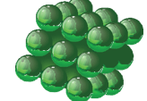 |
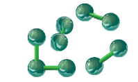 |
|
In solid, the particles are tightly packed with very little space between them. Example. Stone |
Particles in liquids are arranged in a random or irregular way and the space between the particles is greater than that is in solids. Example. Water |
The particles in the gases are arranged far apart. They move freely. Example. Air |
Activity 4
Let us take two sachets of juice. In both the sachets, it is written 100ml. Let us empty two sachets and pour the juice into the following glasses.
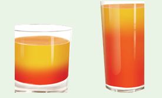
Does its shape change? Yes or NO
A liquid needs a container and it takes the shape of a container because the particles slide over one another and keep moving.
Does its volume change when it is poured into a big glass as well as a small one? Yes or No
The amount of juice is the same in both glasses.
How will you find out whether the volume has changed or not?
The volume of a liquid remains the same whether it is kept in a large container or a small one but its shape changes.
Activity 5
Lift an uninflated cycle tube. Inflate it and now lift it again. Is there a change in the weight? Can we say that air has mass?
We can say that air is also a matter. Though we cannot see it, it occupies space and also has mass. Let us try to know more about matter.
Test yourself
1. Name an object which is brittle and transparent dash.
2. Name an object which can be stretched dash.
3. Name two objects which can be bent dash.
Let us take three identical syringes.
Close the nozzles tightly with a cork. After removing the plunger first let us fill it with fine chalk powder. Try to press plunger down. What do you observe?
Now let us fill the second one with water. Press the plunger down. What do you observe? Let us now draw the piston back to suck air into the third one. Press the plunger down. What do you observe? Is it easy or hard to press? Record your observations and share among the group members.
You would have observed that the plunger moved freely in syringe with air than in water. It was difficult to press the liquids and the piston hardly moved in chalk powder. Thus, we can conclude that gases are highly compressible as compared to liquids and solids.
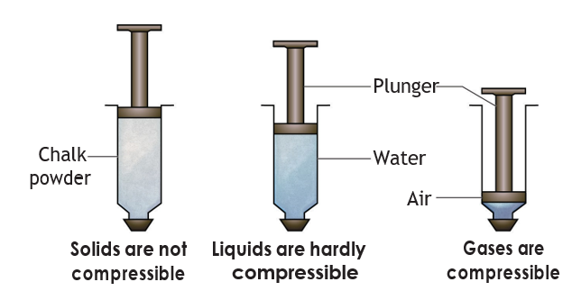
Think to learn
Liquefaction of gases' is the process by which substances in their gaseous state are converted to the liquid state. When the pressure on a gas is increased, its molecules come closer together, and the temperature is reduced. This removes enough energy to make it change from the gaseous state to the liquid state.
Lets summarize
Serial number |
Solids |
Liquids |
Gas |
1 |
Solids have definite shape and volume |
Liquids have no definite shape. Liquids attain the shape of the vessel in which they are kept. |
Gases have neither a definite shape nor a definite volume. |
2 |
Solids are incompressible |
Liquids can compressible to a small extent. |
Gases are highly compressible |
3 |
There is little space between solid particles. Particles are tightly packed or arranged. |
Liquid particles have a greater space between them. Particles are not tightly packed or arranged. They are free to move. |
The space between gas particles is the greatest. Particles are very loosely packed or arranged. |
4 |
Solid particles attract each other very strongly. |
The force of attraction between liquid particles is less than solid particles. |
The force of attraction is least between gaseous particles. |
5 |
Particles of solid cannot move freely. |
These particles move freely. |
Gaseous particles are in a continuous, random motion. |
In shops, we find products which are sold with label 100% pure! For common people pure means unadulterated, does not contain any cheap or harmful additives. Are they really pure substances as they claim to be?
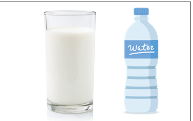
For a Chemist the word ‘pure’ means something else!
A pure substance is made up of only one kind of particles.
Pure substances may be elements or compounds.
An element is made up of same kind of atoms.
A molecule consists of two or more atoms.
Compound is the substance formed by the chemical combination of two or more elements.
Mixture is a physical combination of two are more substances.
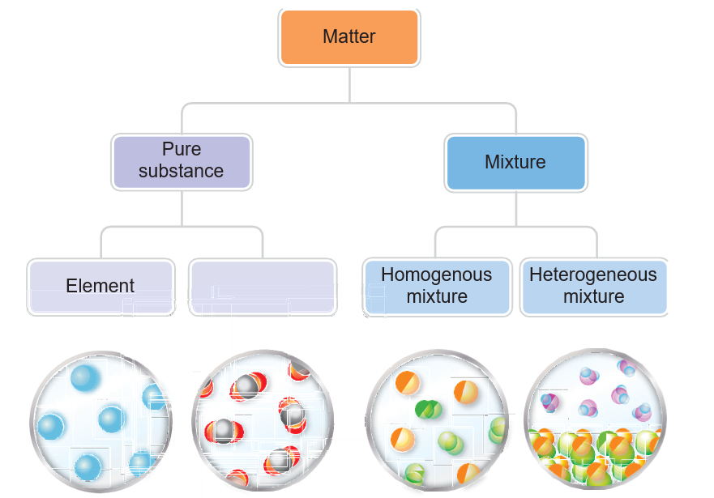
Let us consider the following examples. We all eat snacks. Can you identify and mention a few things that are present in a mixture or fruit mixture? You are able to identify the ingredients in them from their colours, appearance or taste.
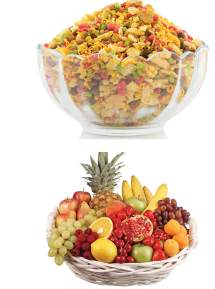
We mix rice, dal, salt, chillies, pepper, ghee and other ingredients to make pongal. Pongal is also an example for mixture.
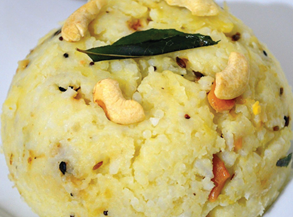
Why do we call these as mixtures? Because they are made of two or more ingredients or components that are physically separable.
Explore
Can we always see the different components of the mixture with our naked eyes?
Let us compare the vegetable salad and soda water. In vegetable salad the individual vegetable can be separated physically. In soda water we can neither see nor separate the components physically.
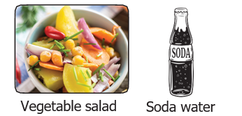
Try it yourself
Identify the mixture given in the table below. Write 'yes' for a mixture and 'no' if it is not a mixture. You may also write 'I do not know' and later discuss with your teacher.
Mixture |
Yes or No |
Borewell water |
|
Copper wire |
|
Sugar cube |
|
Salt Solution |
|
Air is a mixture because it contains oxygen, nitrogen, carbon dioxide, water vapour, noble gases and other gases. Milk is also a mixture. It contains water, fat, protein etc.
Lemon juice is a mixture. Some of us like to have it with less sugar; while others like to have it with more sugar. But either way, it is still lemon juice - prepared from lemon extract, water and sugar and is a mixture though the amount of sugar added is different. Same way even if we add extra water or lemon extract it will still be a mixture. A mixture need not have a fixed proportion of components.
A mixture can be a physical combination of two or more elements. Example: 22 carat gold which is composed of gold and copper or gold and cadmium.
It can be a physical combination of two or more compounds. Example: Aerated drink which is composed of carbon dioxide, water, sweetening and colouring agents.
It can be a physical combination of an element and a compound. Example: Tincture of iodine is composed of Iodine in alcohol.
Are all mixtures used as they are? Or is there a need for separating the components? Materials we use in our day- to-day life are got from different sources and are very often combined with other substances.
Mixtures like coffee and ice cream are taken as such. There is no need for separation of this substances. Metals occur in the form of ores under the earth’s crust. But if we want to use a pure metal, we need to adopt a laborious process of extraction to separate the useful metal from the ore.
what is meant by separation? The process by which the components of mixture are isolated and removed from each other to get pure substance is called separation. To know about the original properties and uses of the individual substance we need separation.
When and why do we need to separate mixtures?
When we need to remove impurities or harmful components from the mixtures. Example. Stones from rice.
When the useful component has to be separated from other components. Example. Petrol from petroleum.
When a substance has to be obtained in highly pure form. Example. Gold from gold mines.
Let us visit Selvi’s Family
It is 7 am and Selvi’s family is busy. At home, in the kitchen, Selvi’s mother is making tea for the family and her grandmother is separating butter from curds. Her father and uncle are out in the field collecting paddy after harvesting. Selvi is helping her mother to cook rice and is separating stones from the rice. Selvi’s little brother Balu is fascinated by a piece of magnet that was given by his friend and is playing outside in the sand with it.
Can you list out in your note book, the different activities that Selvi’s family members are engaged in?
Let us explore the different separating methods involved in the above activities and also learn about a few other methods.
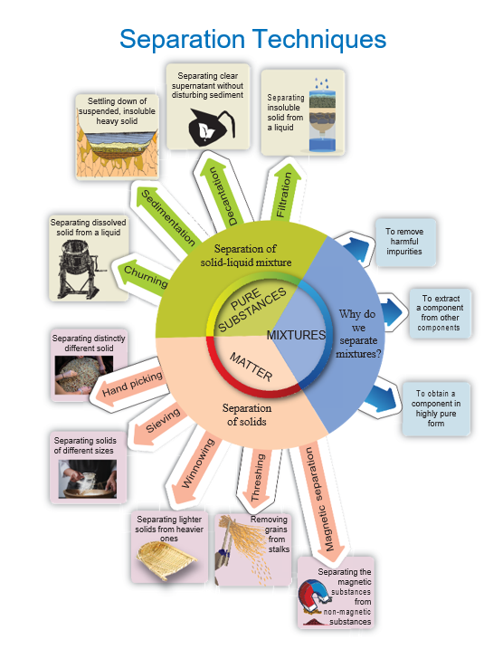
The choice of the method of separation depends upon the properties of the components of the mixture. The separation method may be based on the particle’s size, shape or physical state – solids, liquids or gases.
Filtering
Selvi’s mother used a strainer to remove the tea leaves to get the clear liquid. Larger sized particles of tea leaves will be retained by the strainer while the clear liquid will pass through. This is called filtering.
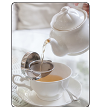
Will you discard the tea leaves after straining? Can you suggest a good way of using them?
Sieving
A sieve is similar to a strainer. Sieving is used when we have to separate solid particles of different sizes. Example: bran from flour, sand from gravel etc. Wire mesh as a strainer sieve is used to separate gravel from sand at a construction site.
Activity 6
Think and find, is it a good idea to separate bran from flour?
Churning
When very fine insoluble solids have to be separated from a liquid as in butter from curd, churning is performed.
The mixture is churned vigorously when solid butter will be collected on the sides of the vessel. Both butter and butter milk obtained after churning are useful and can be consumed.
Do you Know?
In washing machines water is squeezed out from clothes and they are dried. This method is called centrifugation.
Threshing
When we pluck flowers from plants, we are separating the flowers from their stalks. Can we do the same for food grains like rice and wheat? It is not possible because the grains are small in size and also the quantity is very large. Farmers separate grains from their stalks by beating them hard. The grains are separated from their stalks. This is called Threshing.
Winnowing
Rice, wheat and other food grains are covered with husk which cannot be eaten by us. Husk is very light and gets easily blown away by a breeze or wind. The method used for removing husk from grain is called winnowing.
This is done by dropping the mixture slowly from a height in the presence of wind. Lighter solids that is husks will be carried by wind and will be collected in a separate heap while heavier solids that is grains will fall closer and form a separate heap.
Do you Know?
Rice husk also called chaff is the hard coating or protective covering on a seed or grains. It protects the seed during the growing season. Husk can be used as building material, fertilizer, insulation material and fuel.
Handpicking:
How do we separate a stone from rice? If the stones are visible different from the grain, they can be easily picked and separated by hand. This is called handpicking. But if the stones look very similar to the rice grains it is difficult to separate.
Magnetic Separation
In a mixture containing iron, the magnetic property of iron can be used to separate it from non- magnetic substances by using a magnet. Substances that are attracted to a magnet are called magnetic substances. Separating solids using a magnet is called magnetic separation.
Sedimentation
Rice and pulses are often mixed with very fine straw, husk or dust particles which have to be removed before cooking. Are you familiar with the way this is done at home? To remove these particles rice or pulses are washed in water. The lighter impurities float while heavier rice grains sink to the bottom. This is called sedimentation. The water with the impurities is carefully poured down leaving clean rice at the bottom. This is called decantation.
Separating mud from muddy water
Muddy water is a mixture of very fine particles of soil in water. What will happen if muddy water is left undisturbed for some time? Mud being heavy will settle down at the bottom of the beaker and will form the sediment. Water forms the top layer and is called the supernatant liquid.
The settling down of heavier components of a mixture when allowed to remain undisturbed for some time is called sedimentation.
Decantation
This process is done after sedimentation. The supernatant liquid is slowly poured out from the container without disturbing the sediment. The part that settles down the bottom of the liquid is called sediment. The water that is obtained after decantation is called the decantate. The process of separating liquid above the sediment is called decantation.
But even after decantation the water is not completely free from fine soil particles. How can we remove this? We can do this by filtration. Do you think a strainer or a cloth can filter theses very fine particles? Do it by yourself and find out.
Filtration
We use filter papers to remove the finer impurities. A filter paper has very fine pores much smaller than soil particles. Let us see how to use the filter paper.
Take a piece of filter paper. Fold it to make a cone (see figure). Slowly pour the muddy water over the filter paper. On filtration clear water (filtrate) flows down the funnel and mud settles as residue on the filter paper. The method of separating insoluble component (sand, mud etc.) from a mixture using a filter paper is called filtration. The liquid which passes through the filter and comes down is called filtrate and the insoluble component left behind on the filter paper is called residue.
More to know:
Combination of methods are used sometimes for complete separation. If the mixture of sand and salt in water has to be separated several methods like sedimentation, decantation, filtration, evaporation and condensation are used.
Activity 7
Group Activity – Students are divided into four groups
Each group should suggest a method to separate mixtures and also give reasons why they used a particular method and what property of the components forms the basis for separation. Examples should be drawn from day-to-day life. After the group presents its method to the rest of the class, the whole class will discuss and analyse if the suggested method will work and then make a note of it in the table given below.
Separation Method |
Example |
Basis For Separation |
|
|
|
|
|
|
|
|
|
|
|
|
Sometimes, things that we buy in the market are mixed with harmful and unwanted substances. It is called adulteration. Food can also get adulterated due to carelessness or lack of proper handling.
We must be careful about the common adulterants in our consumable goods especially in food. Any adulterated food when consumed will be harmful and can be a health hazard.
An adulterated substance will not indicate the true properties of the original substance. For example, used tea leaves are sometimes used as adulterants in tea. Turmeric powder is adulterated with a bright yellow chemical which is poisonous to us.
Do you know?
In most houses people use commercial water filter to remove not only the impurities but also to kill the harmful germs in water using UV rays. Reverse Osmosis (RO) is a process of removing impurities from water to make it potable.
Activity 8
Collect and share information on common adulterants and their detection in food stuff in the class. Watch the youtube video: 10 simple tricks to find adulterated food. https://www.youtube.com/watch? v=X L i W u n n u d Y
Matter is anything that has mass and occupies space.
All matter is made up of extremely small particles called atoms.
Matter is classified into solids, liquids and gases on the basis of two important factors.
a. The way the particles are arranged
b. The way the particles attract each other.
Difference between the properties of solids, liquids and gases is due to the difference in the arrangement of the particles and the nature of the attractive forces between them.
A pure substance can be an element or a compound and it can be made up of only one kind of particles.
A mixture is an impure substance containing two or more components physically mixed in any proportion.
Separation of mixtures is done
1. to remove harmful components.
2. to obtain the useful components.
3. to obtain a substance in a highly pure form
Different separation methods are adopted depending on the properties of the components.
Handpicking – Particles reasonably large in size to be recognised can be picked by handpicking.
Winnowing – Adopted to separate lighter solids from heavier ones.
Magnetic separation – Separating magnetic substances from non-magnetic substances.
Sedimentation – Settling down of suspended, insoluble and heavy solid particles (used to separate solid – liquid mixtures).
Decantation - Process of pouring out the clear supernatant liquid without disturbing the sediment.
Filtration – Process of separating insoluble solid particles (residue) from a liquid (filtrate) by using a filter paper.
Adulteration – Making things impure by the addition of a foreign or inferior substance.
1. dash is not made of matter.
a. gold ring
b. Iron nail
c. Light ray
d. Oil drop
2. 200 ml of water is poured into a bowl of 400 ml capacity. The volume of water will be dash
a. 400 ml
b. 600 ml
c. 200 ml
d. 800 ml
3. Seeds from water-melon can be removed by dash
a. hand-picking
b. filtration
c. magnetic separation
d. decantation
4. Lighter impurities like dust when mixed with rice or pulses can be removed by dash
a. filtration
b. sedimentation
c. decantation
d. winnowing
5. dash is essential to perform winnowing activity.
a. Rain
b. Soil
c. Water
d. Air
6. Filtration method is effective in separating dash mixture.
a. solid-solid
b. solid-liquid
c. liquid-liquid
d. liquid-gas
7. Among the following dash is not a mixture.
a. coffee with milk
b. lemon juice
c. water
d. ice cream embedded with nuts
1. Matter is made up of dash
2. In solids, the space between the particles is less than in dash
3. Grains can be separated from their stalks by dash
4. Chillies are removed from ‘Upma’ by dash method.
5. The method employed to separate clay particles from water is dash
6. Water obtained from tube wells is usually dash water.
7. Which among the following dash will get attracted to by magnet? (safety pins, pencil and rubber band)
1. Air is not compressible.
2. Liquids have no fixed volume but have fixed shape.
3. Particles in solids are free to move.
4. When pulses are washed with water before cooking, water is separated from them by filtration.
5. Strainer is a kind of sieve which is used to separate a liquid from solid.
6. Grain and husk can be separated by winnowing.
7. Air is a pure substance.
8. Butter from curd is separated by sedimentation.
1. Solid: Rigidity: Gas: dash.
2. Large Inter-particle space: Gas: dash: solid.
3. Solid: Definite shape: dash: Shape of the vessel.
4. Husk-Grains: Winnowing: Sawdust- Chalk piece: dash
5. Murukku from hot oil: dash: Coffee powder residue from decoction: dash
6. Iron-sulphur mixture: dash: Mustard seeds from Urad-dhal: Rolling
a)
Property |
Example |
Breaks easily (Brittle) |
Metal pan |
Bends readily |
Rubber band |
Can be stretched easily |
Cotton wool |
Gets compressed easily |
Mud pot |
Gets heated readily |
Plastic wire |
b )
|
A |
B |
C |
1 |
Separation of visible undesirable components |
Water mixed with chalk powder |
Magnetic Separation |
ii |
Separation of heavier and lighter components |
Sand and water |
Decantation |
iii |
Separation of insoluble impurities |
Iron impurities |
Filtration |
iv |
Separation of magnetic components from non- magnetic components |
Rice and stone |
Hand-picking |
v |
Separation of solids from liquids |
Husk and paddy |
Winnowing |
1. Define the term matter.
2. How can husk or fine dust particles be separated from rice before cooking?
3. Why do we separate mixtures?
4. Give an example for mixture and justify your answer with reason.
5. Define - Sedimentation.
6. Give the main difference between a pure substance and an impure substance.
1. A rubber ball changes its shape on pressing. Can it be called a solid?
2. Why do gases not have fixed shape?
3. What method will you employ to separate cheese (paneer) from milk? Explain.
4. Look at the picture given below and explain the method of separation illustrated.
5. How can you separate a large quantity of tiny bits of paper mixed with pulses or dal?
6. What is meant by food adulteration?
7. Mr. Raghu returns home on a hot summer day and wants to have buttermilk. Mrs. Raghu has only curd. What can she do to get buttermilk? Explain
1. Distinguish the properties of solid, liquid and gas. Draw a suitable diagram.
2. Using suitable apparatus from your laboratory separate the mixture of chalk powder, mustard oil, water and coins. Draw a flow chart to show the separation process.
3. Justify your answer.
Arrangement of particles in three different phases of matter is shown above.
a) Which state is represented by Figure 1?
b) In which state will the inter particle attraction be maximum?
c) Which one of them cannot be contained in an open vessel?
d) Which one can take the shape of its container?
4. Malar’s mother was preparing to cook dinner. She accidentally mixed ground nuts with urad-dhal. Suggest a suitable method to separate the two substances so that Malar can have ground nuts to eat.
5. In a glass containing some water, tamarind juice and sugar is added and stirred well. Is this a mixture? Can you tell why? Will this solution be sweet or sour or both sweet and sour?
1. Debate on 'Food adulteration and detection'
1. Visit a nearby paddy field and rice mill and note down the different separating techniques used there. Is technology replacing some traditional practices?
Watch youtube video in the given link
https://www.youtube.com/watch? v = 9 D j c 5 Z V U y U w
https://www.youtube.com/watch? v=D J G R J 4 q L 4 - A
1. Write the sequence of steps you would use for making tea. (Use the words: mixture, dissolve, filtrate and residue).
1. Make a fruit or vegetable salad. Give reasons why you think it is a mixture.
2. Connect with sports
Air is not a pure substance. It helps us in many ways from breathing to playing. Balloon sports are a very popular sport. Hot air is lighter than cool air. So, the balloons filled with hot air rise up. Find out more about hot air balloons.
ICT Corner Types of matter

Step 1: To learn more about the matter around us type Science Kids in the Google browser and select games Go inside and select matter. Now the following logo can you drag will appear on the screen. Then click ok.
Step 2: Three divided columns will appear on the screen. The first section is for solid and the second section is for liquid and the third one is for gas. Now when we press this symbol, at the bottom items will appear at the bottom. We have to drag them to their respective column.

Types of matter URL:

http://www.sciencekids.co.nz/gamesactivities/gases.html
To know about the varieties of plants.
To know about the parts and functions of plants.
To know the different forms of leaves, functions and their modifications.
To understand that the food manufactured by plants is consumed by animals and human.
To know the different types of habitats.
To understand that plants exhibit adaptations and modifications based on the habitat.
To know that life forms depend on each other.
Rani and Ravi went to vegetable market with their mother. They saw variety of fresh green vegetables with attractive colours. Their mother bought cauliflower, cabbage and raddish. Ravi asked his mother 'Mom, do all the vegetables grow under the soil?' His mother answered, " No Ravi, we get some vegetable from stem, some from roots. Even some flowers are used for cooking". Rani and Ravi were surprised to know that vegetables are from different parts of the plant. After returning home they sorted out all vegetables from the bag and discussed which vegetable is from stem, which is from root and which is from flower. Their mother collected keezhanelli, curry leaves, and coriander leaves from the garden and said that the purpose of using these leaves in cooking is to add medicinal value and aroma. Discuss with your teacher about the pictures given below.
Biology is a natural science concerned with the study of life and living organisms, including their structure and functions.
The living world comprises of plants and animals. Plants can prepare food by themselves, grow in size, and reproduce. Various parts of the plants are used as food, medicine, wood, and shelter.
Our body is made up of many organs. Similarly, the plant body is also made up of several organs such as root, stem, leaves and flowers. Plants are of many forms and many colours, yet they are alike in some manner. That is, they all have stems and leaves above the ground which we can see easily and roots below the ground.
As shown in the picture, a flowering plant consists of two main parts. They are,
1. Root system.
2. Shoot system
Let us learn about them in detail.
1. Root System
The underground part of the main axis of a plant is known as root. It lies below the surface of the soil. Root has no nodes and internodes. It has a root cap at the tip. A tuft of root hairs is found just above the root tip. Roots are positively geotropic in nature.
Root system is classified into two types.
a. Taproot system
b. Fibrous root system
a. Taproot system
It consists of a single root, called taproot, which grows straight down into the ground. Smaller roots, called lateral roots arise from the taproot. They are seen in dicotyledonous plants.
Example: Bean, Mango, Neem.
b. Fibrous root system
It consists of a cluster of roots arising from the base of the stem. They are thin and uniform in size. It is generally seen in monocotyledonous plants.
Example: Grass, Paddy, Maize.
Activity 1
Water absorption by Root
Aim: To observe absorption of water by root.
What you need? A carrot, a glass of water and blue ink.
What to do? Place a carrot in a glass of water with a few drops of blue ink. Leave the carrot in water for two to three days. Then cut the carrot into half-length wise and observe.
What do you learn? Blue colour appears in carrot which indicates the upward movement of water in the carrot showing that root conducts water.
Functions of the Root
Fixes the plant to the soil.
Absorbs water and minerals from the soil.
Some plants like carrot and beet root store food in root.
2. Shoot system
The aerial part of the plant body above the ground is known as the shoot system. Main axis of the shoot system is called the stem. The shoot system consists of stem, leaves, flowers and fruits.
Stem
Stem grows above the soil, and it grows towards the sunlight. It has nodes and internodes. Nodes are the parts of stem, where leaf arises. The part of the stem between two successive nodes is called internode. The bud at the tip of the stem is known as apical or terminal bud, and the buds at the axils of the leaves are called axillary buds.
Activity 2 Conduction of water
Aim: To observe conduction of water by stem.
What you need? A small twig of balsam plant, a glass of water and a few drops of red ink.
What to do? Place the small twig in the water with red ink.
What do you see? The stem becomes reddish.
What do you learn? This is because red coloured water is being absorbed by the stem upwards.
Functions of the stem
Supports the branches, leaves, flowers and fruits.
Transports water and minerals from roots to upper aerial parts of the plant.
Transports the prepared food from leaves to other parts through stem.
Stores food as in the case of sugarcane.
Leaf
The leaf is a green, flat expanded structure borne on the stem at the node.
A leaf has a stalk called petiole. The flat portion of the leaf is called leaf lamina or leaf blade. On the lamina, there is a main vein called midrib. Other veins are branched out from mid rib. The portion of the leaf connected in the nodal region of the stem is known as the leaf base. Leaves of some plants possess a pair of lateral outgrowths on the base, on either side of axillary bud. These are called stipules.
The green colour of the leaf is due to the presence of green coloured pigment called chlorophyll. On the lower side of the leave there are tiny pores or openings known as stomata.
Functions of the Leaves
The green leaves prepare food by photosynthesis.
They help in respiration.
They carry out transpiration.
Do you know?
The leaves of Victoria amazonica plant grows up to 3 metres across. A mature Victoria leaf can support an evenly distributed load of 45 Kilograms or apparently young person.
Think to learn
How do we classify the plants?
1. Based on flower, plants can be classified into two main groups. They are: Flowering plants and Nonflowering plants.
2. Based on the presence of seed coat, plants can be divided into two groups. Angiosperms (Seeds are enclosed within a fruit) and Gymnosperms (Seeds are not enclosed within a fruit)
Activity 3
The teacher has to divide students into four groups. Each group leader will get a paper having the plant part (roots, stems, leaves, and flower) written on it, from the teacher. The teacher will take students around the campus to search for their assigned plant parts. They have to locate different types of plants discussed in the class room. The students will return to the class and discuss among themselves to create a poster. For example, flower group will create a poster by identifying correctly each part of the flower. Each group will share their posters within the class.
Activity 4
Read the following story along with your friend
Once, I was a happy monkey. I lived in a beautiful thick forest with my mother and two brothers. We ran and played in the lush grass. On one hot day, I fell fast asleep in the cool shade of a tree. Suddenly the bright sun woke me up. I opened my eyes and could not believe what I saw. Everything has changed. Everything had been destroyed. I stood and looked at the stumps that used to be trees. Nothing was left apart from hard dry ground and only streets and building. I saw a deer that looked very sad. 'Where have all the trees gone and where are all the other animals?' I asked her. She explained how humans had chopped down all the trees, but had not planted new ones to replace them. After a while, I said good bye to the deer. My home is gone. I didn’t know where my family is, and I was hungry and thirsty, day and night. I walked in search of water, food and safe place to sleep. Whenever I stopped to rest, humans drove me away with sticks and angry voices. I could feel my body getting weak and tired. One day when I had almost given all the hope, I came across a cool and dark forest. As I walked through it, I found plenty of food and water. The forest was safe for me. There were no signs of human visiting it.
Why did the deer feel sad?
Who chopped the trees?
Which is the safest place for monkey to live?
What is a habitat? Each and every organism needs a place to live and reproduce. Such a dwelling place is called habitat. From the depths of the ocean to the top of the highest mountain, habitats are the places where plants and animals live.
Types of Habitats
Let us study the two major types of habitats.
1. Aquatic habitat
When we visit a pond, we see some plants appear to float on water. One of the common plants is the Lotus plant. Its leaves float on the water. There is a small frog sitting on a leaf. It is ready to catch the insects flying or fluttering around the flowers. The stem of the plant is seen to be inside (submerged) the water. Its roots are found within the muddy floor of the pond. As this plant grows in water, shall we call it an aquatic plant?
Aquatic habitat includes areas that are permanently covered by water and surrounding areas that are occasionally covered by water. There are two types of habitat namely fresh water habitat and marine water habitat.
a. Fresh water Habitat
Rivers, lakes, ponds and pools are the fresh water habitats. Water hyacinth, water lily and lotus are seen in the fresh water habitat. In these plants roots are very much reduced in size. Stem and leaves have air chambers that allow aquatic plants to float in water.

Do you know?
Air spaces in stems and petioles of lotus are useful for floating in water

b. Marine water habitat
From outer space Earth looks like an awesome blue marble, that’s because more than 70% of Earth’s surface is covered by oceans. Oceans also supports the growth of plants. Marine plants perform about 40% of all photosynthesis that occurs on the planet.
Example: Marine algae, Sea grasses, Marsh grass, Phytoplanktons.

Do you know?
• Nile is the longest river in the world. It is 6650 Km long.
• The Longest river in India is Ganges. It is 2525 Km long.
II. Terrestrial habitat
Terrestrial habitats are the ones that are found on land like forest, grassland and desert. It also includes man-made habitats like farms, towns and cities. They can be as big as a continent or as small as an island. They make up about 28% of the entire world habitat.
Example: Evergreen forest, scrub jungles.
Terrestrial habitat is classified into three types. They are:
a. Forest
b. Grass land
c. Desert
Do you know?
The first land plant appeared around 470 million years ago. They were mosses and liverworts.
The Amazon Rain Forest in South America produces half of the world’s oxygen supply.
a. Forest habitat
Forest is a large area dominated by trees. There are three types of forests. They are: Tropical forests, Temperate forests and Mountain forests. Annual rain fall here ranges from 25 - 200 cm.
b. Grass land habitat
Grassland is an area where the vegetation is dominated by grasses. Grasses range from short to tall. Example: Savanna Grassland.
C. Desert habitat
A habitat without much water is called deserts. Deserts are the driest place on earth. They get less than 25cm of rainfall annually. Deserts cover at least 20% of the Earth. The plants which grow in this habitat have thick leaves that store water and minerals. The plants like cactus store water in their stem and the leaves are reduced to spines. They have long roots that go very deep in the soil in search of water. Types of desert habitat include:
(1) Hot dry deserts
(ii) Semi-arid deserts
(iii) Coastal deserts
(iv) Cold deserts.
Example: Cactus, Agave, Aloe, Bryophyllum
Do you know?
World habitat day is observed on first Monday of October every year.
Fact file
Thar Desert, also called Great Indian Desert, is an arid region of rolling sand hills on the Indian subcontinent. It is located partly in Rajasthan state, north-western India, and partly in Punjab and Sindh (Sind) provinces, Eastern Pakistan.
Activity 5
Visit a nearby nursery. Choose any ten varieties of plants and place them under the appropriate habitats.
Adaptations are special features in plants which help them to survive in the habitats they live over a long period. Plants in a specific environment have developed special features which help them to grow and live in that particular habitat. In this section, Let us study about some adaptations like tendrils, twiners and thorns. These adaptations are seen in plants which live in terrestrial and desert habitats.
1. Tendril Climbers
Tendril is a twining climbing organ of some weak stemmed plants like peas and bitter gourd. Tendril coils round a support and helps the plant to climb.
Examples:
a. Sweet Peas (Lathyrus) - Leaflets are modified into tendrils.
b. Bitter Gourd - Axillary buds are modified into tendrils which help the plant to climb.
Do you know?
Bamboo is one of the fast growing plants, during active growth phase.
2. Twiners
Some plants have weak stems. They cannot stand straight on their own. They must climb on any support to survive.
Example: Clitoria and Jasmine
3. Thorns
Leaves of some plants become wholly or partially modified into sharp pointed structures called 'thorns or spines' for defensive purpose.
Example:
a. Agave-The leaf apex and margins are modified into thorns.
b. Opuntia-The leaves are modified into spines.
c. Bougainvillea-The stem has sharp thorns.
Activity 6
Field Investigation
Name of the student:
Date:
Location:
Plant types to be observed:
1. A tendril climber
2. A twiner
3. A plant with thorn
Tabulate the modification that you have observed in these plants.
HOTS
Cactus plant is green in colour and performs photosynthesis. Which part of this plant does photosynthesis?
The plant body of flowering plant consists of two main parts. They are:
1. Root system
2. Shoot system
Roots fix the plants to the soil. Roots absorb water and minerals from the soil.
Stem is the ascending part of the plant axis. It has nodes and internodes.
Leaves perform three major functions such as
1. Photosynthesis
2. Respiration
3. Transpiration
The surroundings where plants live are called their habitat
The two major habitats are:
1. Aquatic habitat
2. Terrestrial habitat
Adaptations are special features in plants which help them to survive in their habitat.
Tendril is a climbing organ of some weak stemmed plants.
Twiners have weak stem and they cannot stand straight on their own.
1. Pond is an example of dash ecosystem.
a) marine
b) freshwater
c) deserts
d) mountain
2. The important function of stomata is dash
a) conduction
b) transpiration
c) photosynthesis
d) absorption
3. Organ of absorption is dash.
a) root
b) stem
c) leaf
d) flower
4. The habitat of water hyacinth is
a) aquatic
b) terrestrial
c) desert
d) mountain
1. Earth's surface is covered by dash % of water.
2. The driest places on the Earth are dash.
3. Fixation and absorption are the main functions of dash.
4. Primary organs of photosynthesis are dash.
5. Tap root system is present in dash.
1. Plants can live without water.
2. All plants have chlorophyll.
3. Plants have three parts: the root, the stem and leaves.
4. Mountain is an example for freshwater habitat.
5. Root is modified into spines.
6. Green plants need sunlight.
1. Mountain. a. Monocot
2. Desert. b. Branches
3. Stem. c. Dry place
4. Photosynthesis. d. Himalayas
5. Fibrous root. e. Leaves
1. Leaf – Stem – Root - Flower
2. Transpiration – Conduction – Absorption - Fixation.
1. Classify the plants on the basis of their habitats.
2. Mention few desert plants.
3. Define the term habitat.
4. Relate the terms leaves and photosynthesis.
1. Why do we call jasmine plant, a twiner?
2. Compare the taproot and fibrous root systems.
3. Distinguish between terrestrial and aquatic habitats.
4. List out the plants present in your school garden.
1. Make a list of the functions of root and stem.
2. Complete the map by filling the blanks.
ICT CORNER
Life cycle of plantso
Steps 1: To learn more about the parts of the flower type science kids in the google or browser and select games. Then select life cycle of plants in the screen a flower with its part appear drag one of the flower’s stamen into labelled box. Now drag the part of the flower and place it in the labelled box. It’s a trial
Steps 2: Instructions will appear on the screen. When click ok next step will appear. Then we have to drag each and every part of the flower into the relevant box.
Steps 3: When we click the magnifying glass symbol, uses of the floral parts will appear. Then click ok button. Next an image of flower with its parts appears. It’s an evolutionary exercise.
URL:
http://www.sciencekids.co.nz/gamesactivities/lifecycles.html
Pictures are indicative only
To understand that there are many kinds of animals.
To identify the diversity seen both in plants and animals.
To distinguish between unicellular and multicellular organisms.
To identify the variations, present in living forms according to their habitat.
To list out the adaptations exhibited by the animals based on the habitat.
To explain the relationship, present between various living forms.
The National School, Nallur, organised a field trip to a nearby village called Anaikkadu. The students were so happy to see a village with ponds, streams, green fields and coconut trees. With the help of their teacher students were allowed to go around. One of them saw two birds building a nest. Where do the birds build nests and why?
Children saw a number of butterflies fluttering near the flowers. The air was so fresh, so calm, so quiet and so relaxing. They came across a pond in the distance. It had some water. Floating on the water were dark green lotus leaves. A green frog was leaping from one lotus leaf to another making a croaking sound. A girl spotted a rabbit with a short tail.
Can you make a list of the animals seen by the children? Were they all similar? In what way they were similar?
In the living world, a lot of diversity is seen both in animals and plants. Every plant and animal is unique. It is called biodiversity. Biodiversity may be defined as the variety and variability among living organisms and the habitats in which they live.
Biodiversity includes a variety of ecosystems such as those that occur in deserts, forests, mountains, lakes, rivers and agricultural fields. In each ecosystem, living creatures, including humans, form a community interacting with one another and with other animals, plants, air, water and soil around them. The living things form biotic community and non-living things form abiotic community.
Habitat
Fishes and crabs live only in water while many animals like elephants, tigers and camels live on land. The geographical features and environmental conditions on earth differ from one place to another. Though camel can live anywhere it is able to live in deserts more comfortably. Polar bear and penguins’ dwell in cold regions. Living in such harsh conditions requires special features in these animals. They help these organisms to live, breed and excel well in that particular place. Living or dwelling place of an organism is known as habitat.
Activity 1
Look at the picture given below and prepare a chart for the following interpretation.
How does the climate differ in these habitats?
Name some animals that exist in these habitats.
Can an animal survive if it is shifted from one habitat to another contrasting habitat?
Activity 2
Collect the pictures of various ecosystems like lakes, ponds, forests, deserts, mountains, and polar regions and prepare a chart of animals living in these places.
Do you know?
In Jurong Birds Park, Singapore, Penguins are kept in a big glass case with ice bergs and the temperature is maintained at 0° C and below.
Living things are made of small units called cells. All the functions and processes in the body of living things are brought about with the help of these microscopic cells. Some organisms are made of a single cell and these are called unicellular organisms; whereas, the organisms that are made of many cells are called multicellular organisms.
Amoeba, paramecium and euglena are unicellular organisms while fish, frog, lizard, bird and man are multicellular organisms.
1. Unicellular organism
Unicellular organisms are small, usually microscopic. They cannot be seen with naked eye. They are aquatic, simplest and most primitive of all animals. They perform all their physiological activities by the special structures present inside the body called organelles.
Amoeba
We know Amoeba is a unicellular organism. It does all the activities like digestion, locomotion, respiration and reproduction within the same cell.
It swallows food from the water and the food is digested in the food vacuole. Contractile vacuoles help in excretion. Respiration is by simple diffusion through the body surface. They have finger- like projections called pseudopodia, (false foot) which help in movement or locomotion.
Paramecium
Paramecium is also a unicellular organism which lives in water and moves with the help of cilia.
Euglena
Euglena is an unicellular animal which moves with a flagellum.
2. Multicellular organisms
Majority of organisms we see around us, including animals are multicellular. In such organisms, different functions are carried out by different groups of cells or organs in their body. Example: Jelly fish, Earth worm, snails, fish, frog, snakes, pigeon, tiger, monkey and man.
Table 1 The differences between Unicellular and Multicellular Organisms.
Unicellular Organism |
Multicellular Organism |
Unicellular Organism are made up of a single cell. |
Multicellular Organism are organisms that are made up of many cells. |
Unicellular Organism can perform all the functions of life. |
In Multicellular Organism Division of labor exists among cells. Different cells are specialized to perform different functions |
Unicellular Organism are generally very small (microscopic) in size. |
Multicellular Organism are mostly large in size. They are seen through naked eye. |
Unicellular Organism lack tissues, organs and organ systems. |
Multicellular Organism They are composed of tissues, organs and organ systems. |
In Unicellular Organism Growth occurs by an increase in the size of the cells. |
In Multicellular Organism Growth occurs by an increase in the number of cells by cell division. |
Example for Unicellular Organism Amoeba, Paramecium and Euglena. |
Example for Multicellular Organism Earthworm, Fish, Frog, Lizard and human being. |
A Living thing can survive in a particular habitat if its body is adapted to the conditions of that habitat. Plants and animals develop special characteristics or features in their body in order to survive in their habitat (the surroundings). The presence of specific body features for certain habitats which enable a plant or an animal to live in a particular habitat is called adaptation.
The fish live either in freshwater or in marine water. Let us analyse the adaptations seen in fishes for their aquatic life.
Fish
1. The head, trunk and tail of a fish merge to form a streamlined shape. The streamlined body shape helps the fish to move through the water easily.
2. The fish has special organ called 'gills'. It is a respiratory organ which helps to absorb oxygen dissolved in water for breathing. It is adapted to breathe in water.
3. Most of the fishes have slippery scales all over the body which protect the body.
4. The fish has fins for fast swimming.
5. The fish has strong tail fin which acts as rudder to change direction and keep its body balance in water.
Frog
Amphibians lead a dual mode of life, living both in water and land. They are poikilothermic animals. Their body is divided into head and trunk with two pairs of limbs. During the larval stage, frog respire with the help of gills and the adult frog respire through skin, lungs and bucco- pharyngeal region.
Lizard
1. Lizards are scaly-skinned reptiles that are usually distinguished from snakes by the possession of legs, movable eyelids, and external ear openings.
2. They mostly inhabit warm regions. Most lizards are quadrupedal (walk with four legs) and have a powerful limb.
3. Some lizards are able to run bipedally with two legs. In these lizards, the tail is held out backward and upward and acts as a counterweight.
4. Some lizards have the capacity to rotate the head around the head joint.
5. They breathe through lungs.
6. Most lizards eat a variety of insects like mosquitoes and cockroaches with sharp projections on the tongue adapted for grabbing and holding.
7. Some lizards (Dinosaurs) have web in the toes, and few lizards are able to glide or parachute the air and make safe landings.
Birds
1. They have streamlined body covered with feathers. This body shape provides minimum resistance to air.
2. They have beak instead of mouth.
3. They breathe through lungs.
4. They have a pair of wings that are modified forelimbs.
5. They have hollow and light bones.
6. Usually we see birds fly, however they can also hop, move, run, etc., on the ground and they perch well on the branches of tree with the help of a pair of clawed feet.
7. The tail of the bird helps it to control the direction of the movements.
8. They have strong chest muscles which help them withstand the pressure of the air while flapping their wings during flight.
9. At a time, birds can see one object with one eye and another object with the other eye (Binocular vision).
Do you know?
Animals change their location as the season changes. It is called migration. In Tamil Nadu bird sanctuaries are located at Vedanthangal, Kodiyakkarai and Koondhankulam. Many birds from foreign countries like Siberia and Russia migrate to Vedanthaangal. Likewise, during summer and drought conditions birds from our country migrate to foreign countries. These birds are called migratory birds.
Camel
Camel lives in hot desert where water is scarce. Camel is able to survive in desert because of the following special features.
1. The camel has long legs which help it to keep its body away from the hot sand in the desert.
2. A camel can drink large amount of water (when it is available) and store it in the body.
3. A camel’s body is adapted to save water in the dry desert in the following ways:
(1) A Camel passes small amount of urine
(ii) Its dung is dry and it does not sweat.
(iii) Since a camel loses very little water from its body, it can live for many days without drinking
4. A camel’s hump has fat stored in it. In case of energy requirement, a camel can break down stored fat for nourishment.
5. A camel has large and flat padded feet which help it to walk easily on soft sand. Thus, it is called 'Ship of the desert'.
6. Camel has long eye lashes and hairs to protect its eyes and ears from the blowing dust.
7. It can keep its nostrils closed to avoid dust during sand storms in the deserts.
Info Bits
Spending winters in a dormant condition is called hibernation (Winter sleep). Example. Turtle
On the other hand, spending the hot and dry period in an inactive state is known as aestivation (summer sleep) Example. Snail.
Do You Know
Kangaroo rat does not drink water at all. It obtains the required water from the seed it eats.
Table: 2 Adaptive features of animals from different habitats
Serial Number. |
Name of the Animal |
Habitat |
Adaptive features |
1 |
Polar Bear |
Polar region |
Thick skin for protection, white fur |
2 |
Penguin |
Polar region |
Paddle to swim, walk with two legs |
3 |
Mountain Goat |
Mountains |
Strong hooves for running Long hair to protect from cold |
4 |
Lion |
Forest |
Strong and fast runner has sharp claws to catch prey. |
Do you know?
The mountain goat namely Nilgiri Tahr can find small spaces on rock to climb with ease and keep its balance as it feeds.
1. The study of living beings or organisms is called
a. Psychology
b. Biology
c. Zoology
d. Botany
2. Which of the following are the characteristics of living beings?
(1) Respiration
(ii) Reproduction
(iii) Adaptation
(iv) Excretion
Choose the correct one
a. (1), (ii), and iv only
b. (1), (ii) only
c. (ii) and (iv)only
d. (1), (iv), (ii) and (iii)
3. Lizards breathe through their,
a. skin
b. gills
c. lungs
d. trachea
4. All animals need
a. food and water only
b. water only
c. air, food and water
d. food only
5. Which animal has the special organs of breathing called gills?
a. Earthworm
b. Fox
c. Fish
d. Frog
6. Choose the set that represents only biotic components of a habitat.
a. Tiger, Deer, Grass, Soil
b. Rocks, Soil, Plants, Air
c. Sand, Turtle, Crab, Rocks
d. Aquatic plant, Fish, Frog, Insects
7. Which of the following cannot be called as a habitat?
a. A desert with camels
b. A pond with fish and snails
c. Cultivated land with grazing cattle
d. A jungle with wild animals
8. Birds fly in the air with the help of
a. heavy and strong bones
b. soft and thick bones
c. hollow and light bones
d. flat and thick bones
9. Paramecium moves from one place to other with the help of dash
a. pseudopodia
b. flagella
c. foot
d. cilia
10. Kangaroo rat lives in
a. aquatic habitat
b. desert habitat
c. grass land habitat
d. mountain habitat
1. Water bodies, deserts, mountains are called dash.
2. Based on the number of cells present animals are classified into dash and dash.
3. Tail of a bird acts as a rudder which helps to dash.
4. Amoeba moves with the help of dash.
1. Habitat is a living or dwelling place of an organism.
2. The geographical features and environmental conditions on earth remain same from one place to other.
3. Amoeba is a unicellular organism and it moves with pseudopodia.
4. Birds can see only one object at a time.
5. Paramecium is a multicellular organism.
1. Tropical rain forests, grasslands and deserts are known as dash
2. Some living things are made of a single cell, called dash organism.
3. The breathing organ of a fish is known as dash.
4. The lizard dash on the ground with its claw on its feet.
5. Camel stores dash in its hump.
1. How do birds catch their prey?
2. Where can we see camels in India?
3. Name the locomotory organ of Amoeba.
4. What are the body parts of a snake?
5. Which structure helps the bird to change its direction while flying in air?
1. Differentiate between unicellular and multicellular organisms.
2. Write the adaptive features of polar bear and penguin.
3. Mention the features that help a bird to fly is the air?
4. What are the adaptations seen in different types of vertebrates?
1. Describe the various features which help camel dwell well in the desert.
ICT CORNER
Bio diversity
Steps:
Go to Google or browser and type “animal quiz” to know more about the types of animals and their habitation.
When you get the app, press install button for installing. Then click open and start your game.
Many options will be displayed on the screen. From that, you select the option of your choice.
When the choice is selected and the game is started for each animal four options will come. When the correct answer is given it will automatically go to next animal. When the whole episode is over you can go to the starting phase and start the next play.
URL:
https://play.google.com/store/apps/details?id=com.asmolgam.animals
*Pictures are indicative only
To classify the different components of food.
To evaluate the importance of nutrients, present in food.
To know about balanced diet.
To list out the deficiency diseases.
To describe personal hygiene.
To differentiate the diseases caused by bacteria and virus.
The word 'health' refers to a state of complete emotional and physical well- being. Healthcare exists to help people maintain this optimal state of health.
As defined by World Health Organization (W H O), 'health is a state of complete physical, mental, and social well-being, and not merely the absence of disease or infirmity'. Health is a dynamic condition resulting from a body's constant adjustment and adaptation in response to stresses and changes in the environment for maintaining an inner equilibrium called homeostasis.
Hygiene is a science of establishment and maintenance of health conditions or practices (as of cleanliness) conducive to health. Brushing your teeth regularly is an important part of good oral hygiene. Hygiene is defined as the practice of keeping yourself and your surroundings clean, in order to prevent illness or the spread of diseases.
Deepa’s family was preparing their monthly provision list.
Provision List
Raw rice ..............................25 Kilo gram
Wheat .................................. 5 Kg
Pigeon pea ............................ 2 Kg
Green gram ........................... 1 Kg
Black gram ............................ 2 Kg
Cooking oil .............................. 2 liters
Ghee ................................ 500 grams
When Deepa saw the list, she had some questions to ask her parents. Why do we eat comparatively more amount of rice and wheat? Why do we consume less amount of oil and ghee? Discuss about the given list with your teacher.
Activity 1
Identify the following food items and complete the table given below.
Food which I like to eat |
Food which I don’t like to eat |
Food which I have never seen before |
|
|
|
1. Do your favorite foods make you healthy?
2. Do you choose your food by taste or by its nutritive value?
The chemical constituents of food which give us energy, help to build our body and protect us from diseases are called nutrients. The important nutrients are:
1. Carbohydrate
2. Proteins
3. Fats
4. Vitamins
5. Minerals
6. Water.
Activity 2
Collect as many food items as you can and classify them according to the major nutrient content in them.
Carbohydrates
Carbohydrates are energy giving component of the food.
Table 1 Forms of Carbohydrates
Form of Carbohydrates |
Sources |
Sugar |
Fruits, Honey, Cane Sugar, Beetroot |
Starch |
Rice, Maize, Potato, etc. |
Dietary Fibre |
Whole grain, nuts,etc. |
We can obtain carbohydrates in the form of sugar, starch and dietary fibres.
Activity 3
Aim:
To test the presence of Carbohydrate as Starch in the given food item.
What do you need?
Boiled potato, dropper and dilute Iodine solution
How to do?
Smash the boiled potato.
Add two or three drops of dilute Iodine solution on the sample
What do you observe?
The potato turns blue-black in colour.
What do you infer?
Iodine reacts with starch to form Starch-Iodine complex which is blue- black in colour. Thus, the appearance of blue-black colour confirms the presence of starch in the food item.
Fats
Fat is also an energy-giving food and it provides more energy than Carbohydrates. Some important sources of fats are butter, ghee, milk, cheese, paneer, nuts, meat, fish, egg yolk etc. Apart from giving energy, they insulate our body and protect the cells.
Aim:
To test the presence of Fat in the given food item.
What do you need?
Coconut oil, groundnut oil, and any paper.
How to do?
Pour few drops of oil onto the paper and rub it gently with your finger.
In case of ground nut, crush the groundnut and place it on a paper. Now rub the groundnut on the paper.
What do you see?
The paper turns translucent and becomes greasy.
What do you learn?
The given food sample contains fat.
Protein
Proteins are necessary for our growth as well as for regulating various body functions such as digestion. The sources of proteins are pulses, eggs, fish, milk, chicken, soya bean, nut, grams etc, Proteins are body building foods.
Do you know?
Soyabean is the highly rich source of protein.
Activity 5
Aim:
To test the presence of Protein in the given food item.
What do you need?
Egg white, Copper sulphate solution, Sodium hydroxide, Test tube and Bunsen burner.
How to do?
Take a small amount of the food sample (egg white) and put it in the test tube.
Add some water to the test tube and shake it.
Next, heat the test tube for about one minute. After the test tube is cooled down, add two drops of Copper sulphate solution and Sodium hydroxide solution to it.
What do you see?
The food sample turns purple or violet.
What do you learn?
Change in colour of the given food sample into purple or violet confirms the presence of Protein.
Vitamins
Vitamins are required for carrying out various biochemical reactions in our body. Fruits, vegetables, grains and meat products are good sources of vitamins. Vitamins are called as protective food. There are six major vitamins like A, B, C, D, E and K. Vitamin B and Vitamin C are water soluble. Vitamins A, D, E and K are fat soluble.
Table 2 Deficiency Diseases
Vitamin |
Sources |
Disease Defeciency |
Symptoms |
Vitamin A |
Fish oil, Egg, Milk, Ghee, Carrot, Corn, Yellow fruits, Greens |
Night blindness |
Poor vision, difficulty of sight in dim light. |
Vitamin B |
Whole grain, Unpolished rice, Milk, Fish, Meat, Peas, Lentils Green vegetables |
Beriberi |
Nerve weakness, Fatigue. |
Vitamin C |
Oranges, Gooseberry, Green chili, Tomato |
Scurvy |
Bleeding gums |
Vitamin D |
Fish oil, milk and eggs. It is also produced by our skin using sunlight |
Rickets |
Weak and flexible bones |
Vitamin E |
Vegetable oils, green vegetables, Whole wheat, Mango, Apple, Greens |
Nerve weakness, Vision deterioration. |
Sterility, lack of resistance power to illnesses |
Vitamin K |
Green vegetables, Tomato, Cabbage, Eggs, Milk products. |
Weakness of the bones, teeth etc. |
Profuse bleeding after a small injury |
Gooseberries contains nearly 20 times Vitamin C than Orange.
Just Think
A medical camp was conducted in a school. Most of the children were healthy. Some students had some health issues
Priya had bleeding gums.
Raja could not see clearly in dim light. Arun had bent legs.
Can you guess what could be the reasons?
Fact File
Sun screen lotion reduces your skin's ability to produce Vitamin D by upto 95% which may lead to Vitamin D deficiency.
Activity 6
Make your food little healthier. What do you need?
A small cup of green gram seeds, water and thin cloth.
How to do?
Soak the green gram seeds in water over night.
Take out the seeds and strain the water. Wrap the seeds in wet thin cloth.
Keep it for a day or two.
Sprinkle some water whenever it is dry.
What do you see?
You can see white sprouts coming out of the seeds.
What do you learn?
Green gram sprouts are low in calories, have fibre and Vitamin B. They have comparatively high amount of Vitamin C and Vitamin K.
Minerals
Minerals are required for growth as well as for the regulation of normal body function. Green leafy vegetables like spinach, pulses, eggs, milk, fish and fruits are important sources of minerals. Minerals are also a protective food.
Table 3 Minerals and their Functions
Minerals |
Functions |
Calcium |
Strong bones and teeth, Clotting of blood |
Phosphorus |
Strong bones and teeth |
Iodine |
Synthesis of thyroid hormone |
Iron |
Formation of haemoglobin and brain development |
Do you know?
80% of the Moringa leaves in the world are produced in India. The major countries which import Moringa leaves are China, US, Germany, Canada, South Korea and European countries.
Fact File
Moringa leaves are rich in Vitamin A Vitamin C Potassium Calcium Iron and Protein. They also contain powerful anti-oxidants.

Activity 7
Complete the following table
Serial Number. |
Nutrients |
Sources |
Functions |
1 |
Carbohydrates |
Rice, Wheat, Potato |
dash |
2 |
Fats |
dash |
Give us energy |
3 |
Proteins |
dash |
dash |
4 |
Vitamins |
Fruits, Vegetables, Grains, Meat and Dairy products |
dash |
5 |
Minerals |
dash |
Regulation of growth and normal body function |
Water
Our body needs an adequate supply of water in order to maintain good health. Any human being should take minimum eight tumblers (2 Litre) of water every day.
Look at the pictures given below. Mark cross for unhealthy persons tick for healthy persons.

Health is a state of complete physical, mental and social well-being and not merely absence of diseases. Eating a healthy diet keeps you physically and mentally fit. When you are physically healthy, you feel confident, you are more outgoing and have a greater capacity for enjoying life.
Unhealthy food choices lead to obesity and illness, preventing you from socializing with friends and family. So choose your diet carefully.
Balanced Diet
A diet should contain adequate amount of all the necessary nutrients required for healthy growth and activity.

A balanced diet contains sufficient amount of various nutrients to ensure good health. Balanced diet is important for the following reasons.
•It increases the capacity to work.
•It gives good physical and mental health.
•It increases the capacity to resist diseases.
•It helps in proper growth of the body.
Activity 7
Prepare a diet chart to provide balanced diet to a 12-year-old boy or girl. The diet chart should include food item which are not expensive and are commonly available in your area.
Malnutrition
When your diet is not balanced, what would be the consequence? Observe the below picture carefully.
•Do these children look normal?
•Guess, what would be the reason.

These children do not have normal health because of malnutrition.
Malnutrition occurs when all the nutrients that the body needs are not obtained in the proper proportions from the diet. The word malnutrition refers to the condition that results when a person does not take a balanced diet. Malnutrition leads to deficiency diseases. The diseases that are caused due to lack of nutrients in the diet are called deficiency diseases.
Do you know?
India has the second largest number of obese children in the world after China. According to a study it has been found that 14.4 million children in the country have excess weight.
Table 5 Protein deficiency diseases
Deficiency Diseases |
Symptoms |
Kwashiorkar |
Stunted growth, Swelling of face, limbs and belly, Diarrhoea. |
Marasmus |
Skinny appearance, Slow body growth. |
Table 6 Mineral deficiency diseases
Mineral |
Deficiency Disease |
Calcium |
Rickets |
Phosphorus |
Osteomalatia |
Iodine |
Cretinism (in child) Goitre (in adult) |
Iron |
Anaemia |
Activity 8
Visit a nearby Anganwadi centre and find the steps taken by the government to overcome malnutrition and ensure health in the age group 0-5 years.
Physical Exercise
Physical exercise is any bodily activity that enhances or maintains physical fitness and overall health and wellness.

Physical activity is important for many reasons, including:
Increasing growth and development.
Strengthening muscles and the cardiovascular system.
Developing athletic skills, weight loss or maintenance, and enjoyment.
Physical exercise may help to decrease some of the effects of childhood and adult obesity.
Rest
Proper amount of rest is essential for physical and mental health. Rest is as important as nutrition and physical activity for growth and development and good health.

Discuss with Friends
“ Early to bed and early to rise make a man healthy, wealthy and wise”
Benjamin Franklin.
Personal Cleanliness

Hygiene is a set of practices performed to preserve health. According to the World Health Organization (W H O) “hygiene refers to conditions and practices that help to maintain health and prevent the spread of diseases”.
Personal hygiene involves those practices performed by an individual to care for one’s bodily health and well-being, through cleanliness. It includes such personal habit choices as how frequently we bathe, wash hands, trim fingernails, and change clothing. It also includes attention to keep surfaces in the home and workplace, including bathroom facilities, clean and pathogen-free.
Activity 9
One day Rahim, a class six boy vomited three times. He was looking tired and dehydrated. His mother who is working as a nurse prepared a solution and gave it to him to drink. He felt better after sometime and asked his mother what the solution was. His mother told, that it is Oral Rehydration Solution (O R S). Shall we know what an O R S is?
Vomiting or loose motions result in loss of water and cause salt imbalance in the body. Loss of water (dehydration) can lead to serious problems. This can be prevented by consuming O R S at short intervals.
Follow the steps to make O R S at home.
Take a litre of boiled water and cool it.
Add half a teaspoon of salt and six teaspoons of sugar to it.
You can also add a few drops of lemon juice to it. Stir it and give it to the person suffering from vomiting, loose motion or dehydration.
Table 6 Personal Hygiene and Frequency of Cleanliness
Components |
Recommended frequency of cleaning |
Eye hygiene |
Every morning and whenever the face is dirty. |
Hair hygiene |
Weekly twice preferably once in every other day. |
Body hygiene |
Once or twice a day. |
Oral hygiene |
Brushing twice a day. Rinsing after each meal. |
Feet hygiene |
Every day |
Hand hygiene |
Every time after touching contaminated surfaces. Every time before eating and touching clean surfaces. |
Clothe hygiene |
Once or twice a day. |
When you neglect personal hygiene, you are increasing the risk of falling sick. Let us name some of the diseases or conditions caused by microorganism due to the negligence of personal hygiene.
1. Diarrhoea
2. Tooth decay
3. Athlete’s foot (Madurai’s foot)
4. Dandruff.
Do you believe that there are some organisms which you cannot see with your naked eye? Yes. microbes cannot be seen without the help of a microscope.
Most of the microbes belong to four major groups.
Bacteria
Virus
Protozoa
Fungi

Bacteria
Bacteria are very small prokaryotic microorganisms. Bacterial cells do not have nucleus and do not usually have membrane bound organelles.
Bacteria can exist either as independent organisms or as parasites.
They invade tissues.
They produce pus or harmful wastes.
Do you Know?
Disease
Disease is a definite pathological process having a characteristic set of signs and symptoms.
Disorder
Disorder is a derangement or abnormality in function.
Table 7 Bacterial Diseases
Serial Number |
Bacterial diseases |
Mode of transmission |
1 |
Cholera |
Contaminated water |
2 |
Pneumonia |
Inhalation of airborne droplets from a sneeze or cough. |
3 |
Tetanus |
Contamination of wounds with the bacteria. |
4 |
Tuberculosis |
Inhalation of airborne droplets from a sneeze or cough. |
5 |
Typhoid |
Contaminated food or water |
Virus
Virus is an infective agent that typically consist of nucleic acid molecule in a protein coat. It replicates only inside the cells of other living organisms. Virus can infect all types of life forms like plant, animals and microorganisms. They invade living normal cells and use their cell machinery to multiply. They can kill, damage or change the cells and make you sick.

Do you Know?
A Virus that contains R.N.A. instead of D.N.A. is called a Retrovirus.
Diseases caused by Virus
1. Common cold
2. Influenza
3. Hepatitis
4. Polio
5. Smallpox
6. Chicken pox
7. Measles
Discuss in your classroom
Is virus a living thing or non-living thing?
Suggested project
Get a vaccination schedule from a nearby doctor or a hospital. From the list, identify the bacterial diseases and the viral diseases for which vaccination is given.
There are six nutrients. They are: Carbohydrate, Fats, Protein, Vitamins, Minerals and Water
Kwashiorkor and Marasmus are protein deficiency diseases.
Night blindness, scurvy, rickets and beriberi are vitamin deficiency diseases.
Bacteria is a prokaryotic microorganism.
Cholera, typhoid and pneumonia are bacterial diseases.
Influenza, common cold and chicken pox are viral diseases.

1. Our body needs dash for muscle building.
a) carbohydrate
b) fat
c) protein
d) water
2. Scurvy is caused due to the deficiency of dash
a) Vitamin A
b) Vitamin B
c) Vitamin C
d) Vitamin D
3. Calcium is an example for
a) carbohydrate
b) fat
c) protein
d) minerals
4. Bacteria are very small dash microorganism.
a) prokaryotic
b) eukaryotic
c) protozoa
d) acellular
5. We should include fruits and vegetables in our diet, because dash.
a) they are the best source of carbohydrates
b) they are the best source of proteins
c) they are rich in minerals and Vitamins
d) they have high water content
1. There are three main nutrients present in food.
2. Fats are stored as energy by our body.
3. All bacteria have flagella.
4. Iron helps in the formation of hemoglobin.
5. Virus can grow and multiply outside host.
1. Malnutrition leads to dash.
2. Iodine deficiency leads to dash in adults.
3. Vitamin D deficiency causes dash.
4. Typhoid is transmitted due to contamination of dash and water.
5. Influenza is a dash disease.
1. Rice: Carbohydrate: Pulses: dash.
2. Vitamin D: Rickets: Vitamin C: dash.
3. Iodine: Goiter: Iron:dash.
4. Cholera: Bacteria: Smallpox: dash.
1 |
Vitamin A |
a |
Rickets |
2 |
Vitamin B |
B |
Night blindness |
3 |
Vitamin C |
c |
Sterility |
4 |
Vitamin D |
d |
Beri-Beri |
5 |
Vitamin E |
e |
Scurvy |
VI. Complete the diagram.

1. Write two examples for each of the following.
a) Food items rich in fat.
b) Vitamin deficiency diseases.
2. Differentiate between carbohydrate and protein.
3. Define balanced diet.
4. Why should fruits and vegetables not be washed after cutting?
5. Mention any two viral diseases.
6. What are the main features of a microorganism?
1. Tabulate the vitamins and their corresponding deficiency diseases.
ICT CORNER
Balanced food

Steps:
• To learn and know more about balanced food, Go to google or browser and type ninindia nutrition games
• When the homepage opens click pyramid game
• drag and drop the each foodmitem in the pyramid.

URL:
http://ninindia.org/Amulya%20Nutrition%20Games/index.html
*Pictures are indicative only


To know about computers.
To know about the history of computers.
To understand the growth and development of computers.
To understand the generations of computers.
To understand the types of computers.
To apply the knowledge of computer in various fields in our day to day life.
(Boys and girls of standard VI are playing in the playground).
Siva: Hey Salim, I saw your father coming with a big parcel yesterday. I guess you could have bought a new television. Am I right?
Salim: It’s not a television Siva. We bought a new computer.
Malar: Oh, I see. computer! I had seen it used in textile shop for billing.

Selvi: Malar, not only it is used in textile shops, but also in railway stations, banks, ATM’s and in many places. It is used even in our local post offices.
Nancy: Hey! I have seen it in my school.
Salim: Is it only in your school? Nancy, I think your father is also having a computer.
Nancy: Is my father having a computer?! Without my knowledge? I am sure that my father does not have computer. He has only a mobile phone.
Salim: That’s what I say. Your father’s mobile phone is also like a computer.
Nancy: Oh no Salim? What do you mean? How can a mobile phone be compared with a computer?
Salim: Nancy, we usually think that computer should be like a big TV and a box attached with it. But computers are available in different shapes. The works which are done with a computer can also be done using a smart phone. There may be difference in their speed, but their operations remain the same. The big computers are shrunk into small smart phones nowadays because of the technological development. Most of us think that smart phones are only to make calls because of its handy look But, it is not so.

Selvi: What about laptops and tablets? Are they, same like the computers we usually think of?
Salim: Yes, they are all the same. There are different types of computers. But their performance varies according to their capacity.
Siva: That’s ok Salim, why do you need a computer in your home? What will you do in that?
Salim: I can use it to draw, paint, play games and I can learn and develop my general knowledge.
Selvi: Salim, you know more about computers!
Salim: I know very little about computers. As my father uses computer in his office, he knows much about it. I shared very little of what I have learnt from my father.
(All the children stood up when the teacher came and stood near them)
Teacher: What is going on?
Children: We are discussing about the computer sir.
Teacher: Oh, I see, that’s nice. I will explain about computers in detail. Firstly, I will explain you, what is a computer? Computer is an electronic device that processes the data and Information according to our needs. We can save the data and convert it into information. Computers are used in many ways.
Malar: We are eager to know who invented the computer.
Teacher: In the beginning of the 19th century, Charles Babbage, a professor in Mathematics designed an analogue computer. He is known as the father of computer.
The basic structure designed by him is being used in all computers. Similarly, Augusta Ada Lovelace is admired as the first programmer as she developed essential commands for the mathematical operations.

Nancy: Sir, can you tell us which device was used before the invention of computer?
Teacher: In the early stage, there was no computer. Initially the people used a tool called abacus for calculations.

Later, they started using a device called calculator for calculation.
Selvi: Wow! It’s really interesting sir. Then, when did computers come into use Sir?
Teacher: Good question Selvi. Computer didn’t come directly from abacus. The computers that we use today belongs to fifth generation.
Nancy: Oh! Were there four more generations previous to this?
Teacher: Yes Nancy, you are correct.
Siva: Sir! Can you explain us about the five generations?
Teacher: Sure, I can explain.
In the First-generation computers, Vacuum tube was used.
In the Second-generation computers, they used Transistor.
In the Third-generation computers, they used Integrated Circuits.
In the Fourth-generation computers, they used Micro-processor.
In the Fifth-generation computers Artificial Intelligence is used.
![This picture shows the generation of computer. the first generation used vacuum tube technology and were built between 1940 to 1956 the second generation of computers was developed in the late 1956 to 1963 these computers replaced vacuum tubes with transistors. the third generation of computers emerged between 1964 to 1971. this generation used Integrated Circuits. the fourth generation computers were developed in 1971 after third generation that used microprocessors. computers of fifth generation use artificial intelligence AI to perform various task and it is developed from 2001 and it is still being developed.](images/image-199.png)
Selvi: Sir, we are eager to know more about the present computers which we use.
Teacher: Data and information are the two important elements in computers.
Malar: Sir, what is meant by data?
Teacher: Data is the information that has to be processed. It cannot be used directly by us. Generally, they are in the form of numbers, alphabet and images.
Siva: Sir… then what is information?
Teacher: Information is a form of processed data.
Siva: What is software and hardware, Sir?
Teacher: The commands or programs that are used in computer are called software. This software can be divided into two types.
1. Operating software
2. Application software. Nancy: What is Operating Software?
Teacher: Software that is used to operate the computer is called operating software. I think you are familiar with Windows and Linux.
Siva: Then, what is application software?
Teacher: Application software is a software that is used to run a particular program. For example, the software used for painting, playing games in computer.
Nancy: Oh! I have learnt much information about computers today sir.
Malar: Ok Sir, then what is hardware?
Teacher: The parts that are available in the computer that helps the software to work is a hardware.
Salim: Sir, please tell us more about it
Teacher: Yes, sure I will. Whatever we want to send to a computer is sent through a device called input device. For example, the keyboard, mouse and other input devices.
The data or information that has been sent to the computer are displayed out or reproduced through some devices. These are called as output devices. For example, printer, monitor and so on.
Nancy: Ok Sir, then what is CPU?
Teacher: It is the central processing unit. You will learn and understand more about CPU in your higher classes.
All Children together: Thank you so much, sir. Today we have learnt and understood more information about computers.
Do you Know?
(E N I A C- Electronic Numerical Integrator and Computer) was the first Computer introduced in the year 1946. This is the first General purpose computer.

1. Who is the father of computer?
a) Martin Luther King
b) Graham Bell
c) Charlie Chaplin
d) Charles Babbage
2. Which of the following is another form of computer?
a) Blackboard
b) Mobile
c) Radio
d) Book
3. When was the first computer introduced?
a) 1980
b) 1947
c) 1946
d)1985
4) Who is the computer’s first programmer?
a) Lady Wellington
b) Augusta ado Lovelace
c) Mary Curie
d) Mary Comb
5)Pick out the odd one.
a) Calculator
b) Abacus
c)Flash card
d)Laptop
1 Data is dash information.
2 World’s first general purpose computer is dash
3 Information is dash data.
4 Fifth generation computer has dash intelligence
5 Dash is the device that uses Index number.
1)Computer is an electronic device.
2) Sir Isaac Newton invented computer.
3) Computer can do calculations fast.
First generation computer - Artificial Intelligence
Second generation computer - Integrated Circuit
Third generation computer - Vacuum tubes
Fourth generation computer - Transistor
Fifth generation computer - Micro processor
1) What is a computer?
2) Who are the pioneers or forerunners of computer?
3) Write a short note on Data.
4) Name any four input devices.
5) Differentiate hardware and software.
1) Explain in detail above the applications of computer.
1. |
Abacus (அபாகஸ்) |
- |
மணிச்சட்டம் |
2. |
Computer (கம்ப்யூட்டர்) |
- |
கணினி |
3. |
Architecture |
- |
கட்டமைப்பு, வடிவமைப்பு |
4. |
Command |
- |
கட்டளை |
5. |
Calculator |
- |
கணிப்பான், கணக்கிடும் கருவி |
6. |
Cell Phone, Mobile (செல்போன்) |
- |
கைபேசி, அலைபேசி |
7. |
Tablet (டேப்லட்) |
- |
கைக்கணினி, வரைப்பட்டிகை |
8. |
Data |
- |
தரவு, முறைப்ப்டுத்தபட வேண்டிய விவரங்கள் |
9. |
Information |
- |
தகவல் முறைபடுத்தப்பட்ட விவரங்கள் |
10. |
Electronic Machine |
- |
மின்னணு இயந்திரம், மின்சாரத்தால் இயங்கும் இயந்திரம் |
11. |
Analog computer (அனலாக் கம்ப்யூட்டர்) |
- |
குறியீட்டு எண்களைப் பயன்படுத்தி கண்க்கிடும் கருவி |
12. |
Smart phone (ஸ்மார்ட போன்) |
- |
திறன் பேசி |
13. |
Post Office |
- |
தபால் நிலையம் |
14. |
Automated Teller Machine (ATM) |
- |
தானியங்கி பண எந்திரம் |
15. |
Keyboard |
- |
விசைப்பலகை |
16. |
Software |
- |
மென்பொருள் |
17. |
Hardware |
- |
வன்பொருள் |
18. |
Printer |
- |
அச்சுப் பொறி |
19. |
Mouse |
- |
சுட்டி |
20. |
Program |
- |
நிரல் |
21. |
Programmer |
- |
நிரலர் |
1 Measuring Tape - அளவு நாடா
2 Stop clock - நிறுத்துக் கடிகாரம்
3 Measuring jar - அளவுசாடி
4 Unit - அலகு
5 Parallax error - இடமாறு தோற்றப்பிழை
6 Mass - நிறை
7 Weight - எடை
8 Animate factors - உயிருளள காரணிகள்
9 Inanimate factors - உயிரற்ற காரணிகள்
10 Contact forces - தொடு விசைகள்
11 Non-contact forces - தொடாவிசைகள்
12 Linear motion - நேர்கோட்டு இயக்கம்
13 Curvilinear motion - வளைவுப்பாதை இயக்கம்
14 Circular motion - வட்டப்பாதை இயக்கம்
15 Rotatory motion - சுழற்சி இயக்கம்
16 Oscillatory motion Zigzag (Irregular) - அலைவு இயக்கம்
17 motion - ஒழுங்கற்ற இயக்கம்
18 Average speed - சராசரி வேகம்
19 Periodic motion - கால ஒழுங்கு இயக்கம்
20 Non-periodic motion - கால ஒழுங்கற்ற இயக்கம்
21 Uniform motion - சீரான இயக்கம்
22 Non-uniform motion - சீரற்ற இயக்கம்
23 Artificial Intelligence - செயற்கை நுண்ணறிவு
24 Nano robotics - நானோ எந்திரவியல்
25 Diffusion - விரவுதல் பரவுதல்
26 Liquefaction - நீரமமாக்கல்
27 Compressible - அழுத்தப்படக்கூடிய
28 Unadulterated - கலப்படமற்ற
29 Components - பகுதிப்பொருட்கள்
30 Proportion - விகிதம்
31 Extraction - பிரித்தெடுத்தல்
32 Strainer - வடிகட்டி
33 Churning - கடைதல்
34 Threshing - கதிரடித்தல்
35 Winnowing - தூறறுதல்
36 Sedimentation - படியவைத்தல்
37 Decantation - தெளியவைத்து இறுத்தல்
38 Filtrate - வடிநீர
39 Reaction - வினை
40 Dissolution - கரைத்தல்
41 Sublimation - பதங்கமாதல்
42 Melting - உருகுதல்
43 Vaporization - ஆவியாக்குதல்
44 Condensation - ஆவி சுருங்கல்
45 Freezing - உறைதல்
46 Terminal bud - நுனி மொட்டு
47 Auxiliary buds - கோண மொட்டு
48 Nodes - இலைக்கணு
49 Tendril - பற்றுக்கம்பி
50 Twiners - தழுவுகொடி
51 Thorns - முள்
52 Adaptation - தகவமைப்பு
53 Bio diversity - பல்லுயிர்த்தன்மை
54 Eco system - சூழியல் மணடலம்
55 Migration - இடம் பெயர்வு
56 Abiotic community - உயிருள்ள சமூகம்
57 Biotic community - உயிரற்ற சமூகம்
58 Malnutrition - ஊட்டச்சத்துக் குறைவு
59 Deficiency diseases - குறைபாட்டு நோய்கள்
60 Hygiene - சுகாதாரம்
61 Personal Hygiene - தன் சுத்தம்.
SCIENCE – Class VI
List of Authors and Reviewers
Advisory Committee Dr. T.V. Venkateswaran
Scientist, DST, Vigyanaprasar, New Delhi.
Reviewers
P .N. Sundari
Prinicipal, Kola Saraswathy Vaishnav Sr. Sec. School, Kilpauk, Chennai.
N. Kaveri Padmanabhan
Principal, VanavaniMHSS, IIT Campus, Chennai.
Dr. N. Radhakrishnan
Professor , Centre for advanced studies in Botany, University of Madras, Chennai.
Dr. S. Dinakar
Associate Professor, Madura College of Arts and Science College, Madurai.
Dr. K. Chinthanaiyalan
B.T. Asst.,GHS, Periyar Nagar, Nandhambakkam, Kanchipuram.
Content Readers
N. Thamaraikannan
PGT Physics, Jaigopal Garodia National Hr.Sec.School, Tambaram, Chennai.
Dr. S. Ravi Kasi Venkataraman
PGT Physics, Govt.Hr.Sec. School, Semmancherry, Chennai.
T. Subbiah
PGT Physics, Govt. (Girls) Hr.Sec.School, Acharapakkam, Kanchipuram.
K. Ramesh
B.T Asst. (Science), Govt.High School, Esur, Kanchipuram.
ICT Coordinator
P. Ruby Packiam
B.T.Asst.PUMS, K.K.Nagar, Tiruttani.
Art and Design Team
Illustration Dharma, Madhavan,
Prabha and Gowtham
Nanmangalam, Chennai.
Layout Design Johnsmith, Gopinath
Yesu Rathinam, Ashok Kumar
QC
Rajesh Thangappan
Wrapper Design Kathir Arumugam
Co-ordination Ramesh munisamy
Typing
M. Sathya
EMIS Technology Team
R.M. Satheesh
State Coordinator Technical, TN EMIS, Samagra Shiksha.
K.P. Sathya Narayana
IT Consultant,
TN EMIS, Samagra Shikaha
R. Arun Maruthi Selvan Technical Project Consultant, TN EMIS, Samagra Shiksha
Experts & Coordinators Dr. Vanitha Daniel Deputy Director,
SCERT, Chennai.
Dr. D. Prabakaran
Assistant Professor,
SCERT, Chennai.
S. Rajesh
B.T. Asst. GHSS, Vanganoor, Thiruvallur.
Authors
M.N. Thanuja
BT Asst. GHSS, Devarsholai, The Nilgiris.
R. Raman
BT Asst, GHS, vaiyavoor, Kanchipuram.
D. Perumal Raj
BT .Asst, PUMS, Manickamangalam, Thiruvarur.
G. Vasantha Mary
BT Asst, AVRMV, GGHSS, Ambasamudram, Tirunelveli.
K. A. Sharmila
BT Asst, Lady Sivaswami Ayyar, GHSS, Mylapore, Chennai-4.
N. Balusamy
HM (Retd), Corporation Hr. Sec. School, Peelamedu, Coimbatore.
M. Ananthkumar
PGT, GHSS,Agaram, Krishnagiri.
M. Ananthan
BT Asst, GHSS, Servaikaranpatti, Dindigul.
P. Kalaiselvan
Thiruvalluvar HSS, Gudiyatam, Vellore.
Dr. Vidhyageetha
Lecturer - DIET, Aduthurai, Thanjavur.
DR.A. Selvaraj
HM, CSI Andrew’s HSS, Manaparai, Trichy.
Dr.N. Sathyamoorthy
AHM, PGT, ERHSS, Trichy.
N. Tamilarasi
PGT (Retired), St. Joseph GHSS, VadugarpetLalgudi, Trichy.
S. Arasu
PGT-Chemistry, ST. Patrick Anglo Indian HSS, Chennai.
R. Ramyadevi
BT Asst, GHSS, Medavakkam, Kanchipuram.
N. Manikandan
BT Asst, GHS, Rasingapuram, Theni.
Mrs. Helen Edward
Lecturer, DIET, Kumulur, Trichy.
S. Mohan Babu
BT Asst, GHSS, Veerapandi, Salem.
Dr. R. Asir Julius
Assistant Professor, S C E R T, Chennai.
G. Dhavamani Maheshwari
Senior Lecturer, DIET, Tiruvallur.